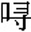

〔日本〕岩崎·昶[403]作
一 电影与观众
电影的发明，是新的印刷术的起源。曾经借着活字和纸张，而输运开去，复制出来的思想，是有着使中世的封建底、旧教底社会意识，归于坏灭的力量的。
有产者底社会的勃兴，宗教改革，那些重大的历史底契机，由此得了结果了。现在，在思想的输运上，在观念形态的决定上，电影所负的任务，就更加积极底，更加意识底了。它是阶级社会的拥护，也是新的“宗教改革”。
这新的印刷术，是由于将运动的照相的一系列，印在Zelluloid的薄膜上而成立的。那活字，并非将概念传给读者，却给以动作和具象。这在直接地是视觉底的这一种意义上，是无上的通俗底的而同时也是感铭底的活字，在原则底地没有言语这一种意义上，则是国际底活字。作为宣传，煽动手段的电影的效用，就在这一点。
当考察作为宣传，煽动手段的电影之际，比什么都重大的，是电影和在那影响之下的大众的关联。
我想用了具体底的数目字来描写它。
据英国的电影杂志《The Cinema》所发表的统计，则一星期中的电影看客之数，其非常之多如下。
亚美利加
常设馆数 15，000
人口 106，000，000
每星期的看客数 47，000，000
对于人口的比率 45%
英吉利
常设馆数 3，800
人口 44，000，000
每星期的看客数 14，000，000
对于人口的比率 33.3%
德意志
常设馆数 3，600
人口 63，000，000
每星期的看客数 6，000，000
对于人口的比率 10.5%
（Hans Buchner—Im Banne des Films S.21.）
又，这些常设馆的收容力的总计，是可以看作每日看客数目的平均底数字的，如下表所示——
常设馆与收容力
常设馆数 收容人员
亚美利加 15，000 8，000，000
德意志 3，600 1，500，000
英吉利 3，800 1，250，000
于这些数字，乘以365则得
8，000，000×365＝2，920，000，000（亚美利加）
1，500，000×365＝547，500，000（德意志）
1，250，000×365＝456，250，000（英吉利）
就可以算作一年间的看客总额的大概。
但这些数字，还是一九二五年度的调查，若据较新的统计，则世界各国的常设馆数，总计约在六万五千以上。
内计——
亚美利加 20，000
德意志 4，000
法兰西 3，000
俄罗斯 10，000
意大利 2，000
西班牙 2，000
英吉利 4，000
日本 1，100
（Léon Moussinac—Panoramique du Cinéma，p.17）[404]
由此看来，则美，德，英三国，在常设馆数上，显示着约三成至一成的增加。于看客数，也可以想定为大约同率的增加；于这三国以外的诸国，也可以推为同样的增加率。
就是，虽在一九二五年度的统计，一年间的电影看客的总额，就已经到了在亚美利加是约二十九亿，在欧罗巴是二十亿，在亚细亚，腊丁·亚美利加，加拿大，亚非利加等是十亿，总计五十九亿那样的好像传奇的空想底数字了。
电影所支配的这庞大的观众，以及电影形式的直接性，国际性，——就证明着电影在分量上，在实质上，都是用于大众底宣传，煽动的绝好的容器。
二 电影与宣传
要正当地认识那作为宣传，煽动手段的电影的价值，必须知道所谓“宣传电影”这一句熟语，以及那概念之无意义。
为了介绍日本的好风景于外国，以招致游客而作的电影，富士山，艺妓，日光，温泉等等，我们常常称之为宣传电影。凡这些，有时是因了教导疾病的预防法，奖励邮政储金，劝诱保险之类的目的而照的。那时候，我们便立刻感到装在那些软片之中的目的，领会了肺结核之可怕，开始贮金，加入生命保险去。然而利用了公会堂，小学校讲堂之类来开演的宣传电影，往往是不收费用的，既然白给人看，便会立刻发生疑惑，以为来演的那一面，一定有着白给人看的根由。这种宣传电影，目的意识就马上被看透。
有着衰老而盲目的母亲的独养子一太郎君，得了召集令，将母亲放在她的一切衰老和盲目之中，“为了君国”，出征去“膺惩可恶的仇敌”了。勇壮的日章旗，万岁，一太郎呀！我们往往被给看这种军国美谈的东西。而这些东西，乃是×××电影公司所制的商业电影，当开演时，也并不叨公会堂和小学校讲堂的光，收取着有名誉的观览费，在普通的常设馆里堂皇地开映。一到这样，善良而无疑的看客，便不觉得这是宣传电影了。他们就将自己的付过正当的观览费这一个事实，做了那影片并非宣传电影的证明。其实，单纯的看客，是没有觉到陷于被那巧妙地布置了的宣传所煽动，所欺骗，然而对于那欺骗，还要付钱的二重欺骗的。
在市民底的用语惯例上的“宣传电影”的无意义，大略就如此。为什么呢，因为没有目的的电影，因而就不是宣传电影的电影之类的东西，不过是幻想的缘故。
我们能够就现在所制成的一切影片，将那隐微的目的——有时这还未意识底地到了目的地步，止是倾向以至趣味的程度罢了，但那倾向以至趣味，结果也是一个重要的宣传价值——摘发出来。那或是向帝国主义战争的进军喇叭，或是爱国主义，君权主义的鼓吹，或是利用了宗教的反动宣传，或是资产者社会的拥护，是对于革命的压抑，是劳资调和的提倡，是向小市民底社会底无关心的催眠药，——要之，是只为了资本主义底秩序的利益，专心安排了的思想底布置。
在一九二八年，开在墨斯科的中央委员会的席上，关于电影，有了
“将电影放在劳动者阶级的手中，关于苏维埃教化和文化的进步的任务，作为指导，教育，组织大众的手段。”
的决议了。苏维埃电影的任务，即在在世界的电影市场上，抗拒着资本主义底宣传的澎湃的波浪，而作×××××宣传。
世界现今是正在作为第二次大战的准备的，观念形态斗争的涡中。而电影，是和那五十九亿的看客一同，可以在这斗争的秤盘上，加上决定底的重量去的。
三 电影和战争
资本主义底宣传电影之中，占着最重要的部门的，是战争影片。
将战争收入电影里去，已经颇早了。当电影刚要脱离襁褓的时候，我们就看见了罗马，巴比伦，埃及之类的兵卒的打仗。这是那时的电影对于舞台的唯一的长处，为了要使利用了自由的Location（就地摄影）和巨大的Set（场内陈设）和大众摄影的光景的魅力，发现到最大限度，所以设法出来的。辉煌的古代的铠甲，环以城垣的都市，神祠，奇怪的偶像，枪，盾，矛，火箭，石弩，这样异域情调的，而在当时，又是壮丽的布置，便忽然眩惑了对于电影还很幼稚的大众的眼，正合了时尚了。
但在初期的这类的战争，归根结蒂，和大排场的马戏，比武之类的把戏，也并无区别。古代罗马和凯尔达戈，都不是现代电影看客的祖国。战争也不过仗了那动底的煽情底的视觉，使他们兴奋，有趣罢了。
引进近代的战争去，而在那里面分明地装入有意识的宣传底要素的最初的电影制作者，我以为恐怕是葛蕾菲士（D.W.Griffith）罢。他在取材于南北战争的《一民族之诞生》（Birth of a Nation），《亚美利加》（America）这些影片上，赞美北军的英雄主义，将所谓合众国建国的精神，化为正当，化为美丽了。凡这些，虽不如后出的许多好战底影片那样，积极底地鼓吹了对外战争，但那目的，则仍在对于国民中有着驳杂分子的人种博物馆一般的合众国和其居民，涵养其确固的国家底概念，爱国心。“十足的亚美利加人”这一句口号，流行起来，成为“亚美利加化”运动的有力的武器，对于从爱尔兰来的巡警，从昔昔利来的菜商，于黑人，于美洲印第安，也都想印上这脸谱去了。
“亚美利加化”的历程，以欧洲大战的勃发，亚美利加的参战，以及和这相伴的急速的帝国主义化为契机，而告了完成。
亚美利加和对德宣战同时，还必须送一百万军队到法兰西去，于是开始了速成的募兵，施行了速成的海军扩张。奏着煽动底的进行曲的军乐队，在各处都市的大街上往来，各十字路口帖着传单，报纸独于此时候说些“亚美利加市民”的义务。易受煽动的青年们，或者为着不去应募，将被恋人所鄙弃，或者为着对于生活，觉得厌倦，或者又为着“进了海军去看看世界”，就来当募兵了。当此之际，亚美利加政府之宣传，也是有史以来的最大规模，而且最见效果的了。
在这宣传之战，充了最主要的脚色的，是新闻和电影。当这时期，在本来的意义上的战争电影，这才制作出来了。
在以根据西班牙的发狂底反对德国者伊本纳支（Blasco Ibáñez）的原作《默示录的四骑士》（Four Horsemen of the Apocalypse），《我们的海》（Mare Nostrum）为代表作品的战争影片上，亚美利加的支配阶级便描写出德国军队的如何凶残，德国潜艇的如何非人道，巧妙地煽动了单纯的花旗人。
然而花旗帝国主义开始呈露它本来的锐锋，却在欧战收场之后，懂得了大众的军国化，是应该在平时不断地安排的时候。
在一九二〇年代的前半，切实地支配了全世界人类的脑子的，首先是活泼泼的战争的记忆。于是发生一种欲望，要符世界大战这一个重大的历史底事件，在国民底叙事诗的形态上，艺术底地再现出来，正是自然的事。而所作的电影，就切实地倾向大众的兴味和感情上去，也正是自然的事。将这有利的情势，忽然利用了的，是花旗帝国主义。战争的叙事法，便以最为好战底的煽动企图，创作出来了。
战争影片的不绝的系列，产生了。《战地之花》（Big Parade），《飞机大战》（Wings）以下，许多反动底宣传影片，列举名目就不胜其烦。不消说，那些电影是没有战时的纯粹的煽动影片一般地露骨的，制作之法，是添些乐剧式恋爱的适当的甘甜，以及掩饰些人道主义底的战争批评的药料，弄得易于下咽，使能在较自然，较暗默之中，达到宣传的目的。但虽然是十分小心的假面，而其究竟目的之所在，则同是将遮眼的东西给与大众，使不明帝国主义底战争的本质，以及赞美亚美利加军队的英雄主义，有时还宣传军队生活的放恣和有趣罢了。（我深惜在这里没有揭出这种战争影片的完全的目录，以那代表底的几个例子，来使我的叙述更加具体起来的纸面和时间了。但我相信将来会有补正的机会的。）
就战争和电影所历叙的这些事实，那自然，也决不是惟亚美利加所独有的特别现象。倒是在别的一切帝国主义强国里，都在争先兴办的。德国将《大战巡洋舰》（Emden）《世界大战》（Weltkrieg）等呈在我们的眼前，法国是制作了《凡尔登——历史的幻想》（Verdun——Vision d'histoire）《蔼克巴什》（L'Equipage）等，英国则以《黎明》（Dawn），日本则以《炮烟弹雨》，《地球在回旋》和《蔚山洋西的海战》等，竭力用心于“军事思想”的普及。
当叙述完战争电影之际，而没有提及作为几个例外底现象的反对战争的倾向，怕是不妥当的罢。
我们在《战地之花》里，在几个段落里，虽然是太感伤底的，然而总算也看见了描写着诅咒战争的心情。那心理，在《战地鹃声》（What Price Glory）中，就更为积极底地表白着。但在这些影片上，对于战争的确然的批评和态度，并无一定。只有着和卓别林（Charlie Chaplin）曾在《从军梦》（Shoulder Arms）里，将战争化为谑画了那样的同一程度的认识。
和这比较起来，技术上非常卓拔的战争影片《帝国旅馆》（Hotel Imperial）的导演者Erich Pommer所作的《铁条网》（Barbed Wire），倘临末没有那高唱人类爱的可笑的夸张，则和猛烈地讽刺了帝国主义战争的名喜剧《阵后谐兵》（Behind the Front）一同，大概是可以属于反战争电影的范畴的了。
四 电影与爱国主义
爱国底宣传电影，也是世界大战后的显著的现象。为什么呢？因为这种电影，虽有外形上的差违，但终极之点，是在向帝国主义战争的意识的准备，鼓舞，在那君权主义上，在那好战性上，和战争影片是本质底地相关联的。
那么，那目的是在那里呢？
直接地，是宣传团体观念，国旗之尊严，间接地，是奖励暴力，使民心倾向右翼政党，当和外国争夺资本市场之际，即刻有军事行动的事，成为妥当化。
这种影片的最活泼的影响，大抵见于选举国会议员，选举大总统的时期，如德国的国权党，尤其是能够仗了爱国主义的电影，博得许多的投票。
例如叫作《腓立大王》（Fridericus Rex，这在日本，是大加短缩，改题为《莱因悲怆曲》了）的普鲁士勃兴的历史影片，是其中的最获成功的。那正是大战后的张皇的时代，且正值跟着德国革命的失败而来的反动的火头上，这是有产阶级的巧妙的宣传。穷极，饿透了的小市民们，在这影片中，看见精锐的腓立大王的禁军的行进，看见七年战争的冠冕堂皇的胜利，于是想起了往日的皇帝的治世，便在无智的廉价的感激中，鼓掌蹈足，吹起口笛来了。
接着这个，而国民底英雄俾士麦的传记，化成电影了，兴登堡的传记，化成电影了。
《俾士麦》（Bismarck）者，单为了那制作，就设起俾士麦电影公司来，照成了两部二十余卷的巨制，凡在这帝国主义底政治家一生中的一切爱国底，煽情底的要素，都一无遗漏地填进在那里面。[405]
《兴登堡》（Hindenburg）者，是乘这老将军当选为大统领——这叨光于影片《腓立大王》和《俾士麦》之处是多么的大呵。——之机，为了他的收罗人心而作的。
一九二七年春，德意志国权党领袖之一，奥古斯德·霞尔书店的事实上的所有者福干培克，乘德国大公司之一乌发公司的财政危机，买进了那股票的过半，坐了乌发公司总经理的交椅了。于是德国的电影事业和那影响力，便全捏在国权党的手里。福干培克立刻在乌发公司的出品计划上，露骨地显示了他的政治底主张。那最是世界底的例子，是《世界大战》（Weltkrieg）的二部作。
对于这，社会民主党的内阁便即刻取了牵制底手段。就是，使德意志银行来对抗福干培克，投资于乌发公司。为了使德国的独占底大电影公司不成为国权党宣传机关，这是不得已的方法。
《世界大战》[406]已有删节的片子，绍介于日本（译者按：在上海，去年也大演了一通），那是有着怎样的倾向和主张的事，大约现在早可以无须详说了罢。
在表面上所标榜的，《世界大战》是将一九一四年至一九一七年的战争中所摄的各国（大抵是德法）的照片，凭了纯粹的历史底客观而编辑的留在软片上的记录。
而且这比起专一描写本国军队的胜利的，勇敢的，爱国的亚美利加式电影来，也真好像近于写实。然而注意较深的观察者，却即刻可以看见。从丹南培克之战起，常只将兴登堡将军的胜利，重复地映出了好几回。而且和写着“在战时屡救祖国的将军，当平和时，也作为大统领而尽力于祖国”等语的字幕一同，这电影也就完结了。[407]
五 电影和宗教
通一切时代，宗教一向在供支配阶级的御用，是已经证明了许多次数的。
这在东洋，则教人以佛教底的忍从和蔑视现世，在西方，则成为基督教底平和主义，想阻止现存的阶级社会的积极底改革。
到二十世纪，宗教虽然已经失却了昔日的权威和信仰，但倒是因为失却，所以对于那支配阶级的奴仆状态，也就愈加露骨，故意起来了。
在物质文明发达较迟的国度中，宗教还有着大大的宣传煽动力。资本主义于是将宗教和电影相结合，能够同时利用了。
例如《十诫》（The Ten Commandments），《基督教徒》（Christian），《宾汉》（Ben Hur），《万王之王》（King of Kings），《犹太之王，拿撒勒的耶稣》（I.N.R.I.）之类的基督教宣传电影，《亚细亚之光》（Die Leuchte Asiens），《大圣日莲》之类的佛教电影，是和感激之泪一同，从全世界的愚夫愚妇，善男信女的衣袋里，赚得确实的布施，从商业底方面看起来，也是利益最多的影片。一切宗派中，罗马加特力教会是最留意于电影的利用的，每年开一回电影会议，议定着那一年中全世界底宣传的计划。
在我们的周围，宗教之力早已几乎视若无物了。至多，也不过本愿寺，日莲宗之流，组织了巡行电影团，竭力想维系些乡下农民的信仰。然而因此便推定宗教的世界底无力，是不可以的。只要看在苏维埃的文化革命的历程中，还不能放掉对于宗教的斗争，而在实行的事实，大概就可以明白其间情势了。[408]
六 电影和有产阶级
为资本主义底生产方法和有产者政府的监视所拘束的现今电影的一切，几乎都被用于拥护有产阶级的事，我相信是已经很明显了的。
但在这里，却将电影和有产阶级的关系，限于较狭的意义，只来论及直接服役于市民有产阶级的光荣和支配的电影这一种。
这种电影，可以分成三样概括底区别。
那第一种，是和封建底，乃至贵族底社会相对抗，而尽讴歌有产阶级之胜利的任务的。因此那全部，几乎都是取材于市民底社会的勃兴的历史影片。××，或者××的野兽底横暴，在其下尝着涂炭之苦的农民，工商阶级。到影片的第七卷，而有产阶级终于蜂起，将电影底的极顶（Climax）和壮大的群集（mob scene），在这里大行展开，这是那典型底的结构。但在大多数的影片上，有产阶级是决不作为一个阶级底总体而蹶起的，大抵由一个（往往是贵族出身，年青，而又眉目秀丽的！）英雄所指导，力点就放在那个人底的英雄主义上。作为那最是性格底的作品，读者只要记起《罗宾汉》（Robin Hood），《斯凯拉谟修》（Scaramouche），《定情之夕》（A Night of Love）来，大约就足够了。在日本的时代剧，尤其是剑剧影片之中，我们也有那不少的例子。
但是，我们又能够在那历史底时代，发见新兴有产阶级所演的革命的脚色，和现在的无产阶级的斗争，其间有很大的类似（Analogie）。倘作者将意识底的强音（Akzent）集中于此的时候，是可以产生优秀的作品的。如《熊的结婚》，《农奴之翼》，《斯各丁城》，《忠次旅行日记》等，便是那仅少的代表。
第二种，是反对无产阶级革命的电影。
《党人魂》（Volga Boatman）是当内务省检阅之际，惹起了大问题，终于遭了警视厅来制限其开映的忧患的影片，但那内容是什么呢？
《大暴动》（Tempest；译者按：在上海映演时，名《狂风暴雨》）也靠了长有数卷的小插画，这才好容易得以许可开演的影片，然而那所选的是怎样的主题呢？
这些影片，是只在用俄国的无产阶级革命为背景这一点上，因而遭了禁止，或重大的删剪的。但要之，那所描写，是将无产阶级革命当作了无统制的暴民的一揆。无教育而不道德的农民和劳动者，倚恃着多数，攻入贵族的城堡去，破坏家具，××美丽的少女，酗酒，单喜欢流血。那是在无产阶级的胜利上，特地蒙上暴虐的假面，涂些污泥，使小市民变成反革命起见而作的有产阶级的××。我们于此，看见了如拥护有产者社会而设的宣传电影，却被×××××××的××所禁止的那种奇怪而且愉快的现象了。
固然，在《约翰南伊之爱》（Liebe der Jeanne Ney）和《最后的命令》（The Last Command）上，剪去了十月革命，那却是检阅者十分做了他所该做的事的。
最后，就来了以《大都会》（Metropolis；译者按：在上海映演时，名《科学世界》）为典型的劳资调和电影的一连串。
关于《大都会》，现在已经无须在这里缕述了。那是揭着“头和手之间，非有心脏不可”这标语的社会民主主义者，宣讲着资本家和劳动者可以不由战争，但靠相互底的协力与爱，即能建设新社会云云的巴培尔塔以前的童话。[409]
七 电影与小市民
有产阶级的电影底宣传，一到阶级间的对立逐渐鲜明地，决定底地尖锐起来，也就陷在无可避免的绝地里了。
在实际上，电影是以大多数的小市民和无产阶级为看客的。而他们，小市民和无产阶级，早已渐渐地觉察出有产阶级的诡计来了。就是，已经注意于“支配阶级制作了宣布那服从于己的观念形态的影片，而以此来做掠取无产者的衣袋的手段”这事实的真相了。
卢那卡尔斯基关于苏维埃电影，曾经说明过“拙劣的煽动，却招致反对的结果”这原则，在这里，却被有产者底地应用了。
露骨的宣传是停止了。最所希望的，是使电影的看客看不见“阶级”这观念。至少，是坐在银幕之前的数小时中，使他们忘却了一切社会底对立。
这样子，就产生了小市民的影片。[410]
在小市民家庭剧中，有两种特征底的倾向——
一，是那罗曼主义。
二，是那弄玄妙（Sophistication）。
粗粗一看，则现在的电影，尤其是电影剧，乃是写实主义底的。而且许多人们，都抱着这样的幻想。但其实，除了极少数的第一流作品以外，一切全没有什么现实底的申诉的。
自然，虽说是罗曼主义，但和给十九世纪时有产阶级革命的艺术以特征的那生着火焰之翼的罗曼主义，是不一样的。这是为了平庸，近视，乐天底的小市民们而设的，也是平庸，近视，乐天底的罗曼主义。这于迭克萨的农民，芝加各的公司人员，亚理梭那的牧童，纽借那的送牛奶人，纽约的速记生，毕兹巴格的野球选手，东京的中学生，横滨的水手，无不相宜。说起来，就是Ready-made（现成）的罗曼主义。作为那象征底的形相，则有珂林·谟亚（Collin Moore），瑙玛·希拉（Norma Shearer），克莱拉·宝（Clara Bow），从一九二六年起，顺次登场来了。就是那样程度的罗曼主义。
每星期薪水（美金）二十五元的大学生出身的公司职员和美尔顿百货公司的娇娃的恋爱故事。珂尼·爱兰特。新福特式的跑车。爵兹乐舞。打猎。
至于这花旗罗曼主义上所必要的此外的布置和氛围气，则读者倘一看《Vanity Fair》的广告栏，更所希望的，是往就近的电影馆，一赏鉴任何的亚美利加影片，大约便能自己领悟的罢。
读者必须明白，这小市民底的罗曼主义，是和亚美利加资本主义还在走着上行线的这一个公式底认识，有不可分的关联的。这事实，在一方面，是每年将九十亿元的国帑，撒在有产阶级的怀中，而使发生了叫作所谓“Four Hundreds”的有闲阶级，利子生活者的大群。[411]
而且有闲阶级，利子生活者的大群，则使他本身的消费底文化，娱乐机关，极端地发达起来了。而从那消费底文化的母胎中，就酵了为一切文化烂熟期之特色的一种像煞有介事，通人趣味，低徊趣味，讽刺，冷嘲等。这过度地洗炼了的生活感情，他们称之为Sophistication。卖弄巴黎式的Chic，以及花旗式地解释了的hard-boiled之类的话，都和这相关联，而为人们所欢喜。
卓别林在《巴黎一妇人》（A Woman of Paris）里，居然表现了那Sophistication的模范（Prototype）。刘别谦（Ernst Lubitsch）在《婚姻范围》（Marriage Circle）里，表现于一套片子上面了。蒙太·培尔，玛尔·辛克莱儿，泰巴第·达赖尔等许多后继者们，都发挥了电影界的玄妙家腔调。
但是，亚美利加虽在那一切的资本主义底兴隆，但本身之中，却已经包藏着到底消除不尽的内底矛盾，而在苦闷。消费不能相副的一面底生产，失了投资市场的大金融资本，荷佛政府的积极底外交，拥抱着五百万失业者的天国亚美利加，现在是正踏在不可掩饰的阶级底对立的顶上了。
这社会情势，将怎样地反映在亚美利加影片之中呢，那是很有兴味的将来的问题。
译者附记
这一篇文章的题目，原是《作为宣传，煽动手段的电影》。所谓“宣传，煽动”者，本是指支配阶级那一面而言，和“造反”并无关系。但这些字面，现在有许多人都不大喜欢，尤其是在支配阶级那方面。那原因，只要看本文第七章《电影与小市民》的前几段，就明白了。
本文又原是《电影和资本主义》中的一部分，但全书尚未完成，这是据发表在《新兴艺术》[412]第一，第二号上的初稿译出来的。作者在篇末有几句声明，现在也译在下面：
“我的，《电影和资本主义》，原要接着本稿，更以社会底逃避的电影，无产阶级方面所作的宣传电影等，作为顺次的问题，臻于完成的。但现在，则仅以对于有产阶级电影的如上的研究，暂且搁笔。
“又，本稿不过是对于每一项目，各能写出独立的研究那样的浩瀚的材料，给了极概括底的一瞥，在这一端，是全篇过于常识底了。请许我声明我自己颇以为憾的事。”
但我偶然读到了这一篇，却觉得于自己很有裨益。上海的日报上，电影的广告每天大概总有两大张，纷纷然竞夸其演员几万人，费用几百万，“非常的风情，浪漫，香艳（或哀艳），肉感，滑稽，恋爱，热情，冒险，勇壮，武侠，神怪……空前巨片”，真令人觉得倘不前去一看，怕要死不瞑目似的。现在用这小镜子一照，就知道这些宝贝，十之九都可以归纳在文中所举的某一类，用意如何，目的何在，都明明白白了。但那些影片，本非以中国人为对象而作，所以运入中国的目的，也就和制作时候的用意不同，只如将陈旧枪炮，卖给武人一样，多吸收一些金钱而已。而中国人对于这些的见解，当然也和他们的本国人两样，只看广告中借以吸引看客的句子，便分明可知，于各类影片，大抵都只见其“非常风情，浪漫，香艳（或哀艳），肉感……”了。然而，冥冥中也还有功效在，看见他们“勇壮武侠”的战事巨片，不意中也会觉得主人如此英武，自己只好做奴才；看见他们“非常风情浪漫”的爱情巨片，便觉得太太如此“肉感”，真没有法子办——自惭形秽，虽然嫖白俄妓女以自慰，现在是还可以做到的。非洲土人顶喜欢白人的洋枪，美洲黑人常要强奸白人的妇女，虽遭火刑，也不能吓绝，就因看了他们的实际上的“巨片”的缘故。然而文野不同，中国人是古文明国人，大约只是心折而不至于实做的了。
因为自己看过之后，大略发生了如上的感想，因此也想介绍给一部分的读者，费去许多工夫，译出来了。原文本是很简短的，只因为我于电影一道是门外汉，虽是平常的术语，也须查考，这就比别人烦难得多，即如有几个题目，便是从去年的旧报上翻出来的，查不到的，则只好“硬译”，而且误译之处，也恐怕决不能免。但就大体而言，我相信于读者总可以有一些贡献。
去年，美国的“武侠明星”范朋克（Douglas Fairbanks）因为美金积得太多，到东洋来游历了。上海有几个团体便豫备欢迎。中国本来有“捧戏子”的脾气，加以唐宋以来，偷生的小市民就已崇拜替自己打不平的“剑侠”，于是《七侠五义》，《七剑十八侠》，《荒山怪侠》，《荒林女侠》，……层出不穷；看了电影，就佩服洋《七侠五义》即《三剑客》[413]之类。古洋侠客往矣，只好佩服扮洋侠客的洋戏子，算是“过屠门而大嚼，虽不得肉，亦且快意”[414]，正如捧梅兰芳者，和他所扮的天女，黛玉等辈，决不能说无关一样，原是不足怪的。但有些人们反对了，说他在演《月宫宝盒》（The Thief of Bagdad[415]）时摔死蒙古太子，辱没了中国。其实呢，《月宫宝盒》中的英雄，以一偷儿连爬了两段阶级的梯子，终于做了驸马，正是译文第七章细注里所说，要使小市民或无产者“为这飞腾故事所激励，觉得要誓必尽忠于有产阶级”的玩艺，决不是意在辱没中国的东西。况且故事出于《一千一夜》[416]，范朋克并非作家，也不是导演，我们又不是蒙古太子的子孙或奴才，正不必对于他，为美金而演剧的个人，如此之忿忿。但既然无端忿忿了，这也是中国常有的惯例，不足怪的，——在见惯者。后来范朋克到了，终于有团体要欢迎，然而大碰钉子，“范氏代表谓范氏绝对不允赴公共宴会”，竟不能得到瞻仰洋侠客的光荣。待到范朋克“到日本后，一切游程，均由日人代为规定，且到东京后，将赴影戏院，与日本民众相见”（见十八年十二月十九日《申报》），我们这里的蒙古王孙乃更不胜其没落之感，上海电影公会有一封宛转抑扬的信，寄给这“大艺术家”。全文是极有可供研究的处所的，但这里限于纸面，只好摘录了一点——
“曾忆《月宫宝盒》剧中，有一蒙古太子，其表演状态，至为恶劣，足使观者之未知东方历史，未悉东方民族性质者，发生不良之印象，而能成为人类相爱进程上绝大之阻碍。因东方中华民国人民之状态，并不如其所表演之恶劣也。敝会同人，深知电影艺术之能力，转辗为全世界一切民情风俗智识学问之介绍，换言之，亦能引导全世界人彼此之相爱，及世界人类彼此之相憎。敝会同人以爱先生故，以先生为大艺术家故，愿先生为向善之努力，不愿先生如他人之对世界为不真实之介绍，而为盛誉之累也。”
文中说电影对于看客的力量的伟大，是很不错的，但以为蒙古太子就是“中华民国人民”，却与反对欢迎者流，同一错误。尤其错误的是要劝范朋克去引“全世界人彼此之相爱”，忘却了他是花旗国[417]里发了财的电影员。因此一念之差，所以竟弄到低声下气，托他去绍介真实的“四千余年历史文化所训练的精神”于世界了——
“敝会同人更敢以经过四千余年历史文化训练之精神，大声以告先生。我中华人民之尊重美德，深用礼仪，初不异于贵国之人民。更以贵国政府常能于世界国际间主持公道，故为我中华人民所敬爱。先生于此次东游小住中，想已见到真实之证据。今日我中华政治之状态，方在革命完成应经历之过程中，有国内之战争，有不安静之纷扰，然中华人民对于外来宾客如先生者，仍能不忘应有之礼节，表示爱人之风度。此种情形，先生当能于耳目交接之间，为真实之明了。虽间有表示不同之言论者，然此种言论，皆为先生代表以及代表引为己助参加发言者不合礼节隔离人情之宣言及表示所造成。……
“希望先生于东游之后，以所得真实之情状，介绍于贵国之同业，进而介绍于世界，使世界之人类与中华所有四万万余之人民为相爱之亲近，勿为相憎之背驰，以形成世界不良之情状，使我中华人民之敬爱先生，一如敬爱美国之政府。”
但所说明的精神，一言以蔽之，是咱们蒙古王孙即使国内如何战争，纷扰，而对于洋大人是极其有礼的。就是这一点。
这正是被压服的古国人民的精神，尤其是在租界上。因为被压服了，所以自视无力，只好托人向世界去宣传，而不免有些谄；但又因为自以为是“经过四千余年历史文化训练”的，还可以托人向世界去宣传，所以仍然有些骄。骄和谄相纠结的，是没落的古国人民的精神的特色。
欧美帝国主义者既然用了废枪，使中国战争，纷扰，又用了旧影片使中国人惊异，胡涂。更旧之后，便又运入内地，以扩大其令人胡涂的教化。我想，如《电影和资本主义》那样的书，现在是万不可少了！
一九三〇，一，十六，L。
[1] 《语丝》 参看本卷第9页注〔10〕及《三闲集·我和〈语丝〉的始终》。
[2] 《奔流》 文艺月刊，鲁迅、郁达夫编辑，1928年6月在上海创刊，1929年12月出至第二卷第五期停刊。
[3] 《萌芽》 文艺月刊，鲁迅、冯雪峰编辑，1930年1月在上海创刊，从第一卷第三期起，成为“左联”的机关刊物之一。1930年5月出至第一卷第五期被国民党政府禁止，第六期改名为《新地月刊》，仅出一期即停刊。
[4] 作者1930年在上海各大学讲演的情况，据鲁迅日记，这年2月21日、3月9日先后两次在中华艺术大学讲演，3月13日在大夏大学、3月19日在中国公学分院、8月6日在夏期文艺讲习会讲演。各次讲稿都没有保存下来。据当时报刊所载消息和与会者的忆述，前四次讲题分别为《绘画杂论》、《美术上的写实主义问题》、《象牙塔与蜗牛庐》、《美的认识》。最后一次讲题不详。
[5] 象牙塔 原是十九世纪法国文艺批评家圣佩韦（1804—1869）批评同时代浪漫主义诗人维尼的用语，后来用以比喻脱离现实生活的文艺家的小天地。
[6] “蜗牛庐” 据《三国志·魏书·管宁传》裴松之注引《魏略》，东汉末年，隐士焦先“自作一瓜（蜗）牛庐，净扫其中，营木为床，布草蓐其上，至天寒时，搆火以自炙，呻吟独语”。又据《三国志·魏书·管宁传》裴松之注引《高士传》，焦先“见汉室衰，乃自绝不言。及魏受禅，常结草为庐于河之湄，独止其中。冬夏恒不着衣，卧不设席，又无草蓐，以身亲土，其体垢污皆如泥漆，……或数日一食……亦有数日不食时。……口未尝言……”
[7] 指上海《民国日报》登载的一篇短文。1930年3月18日《民国日报·觉悟》在“呜呼，‘自由运动’竟是一群骗人的勾当”的栏题下，刊载署名敌天（自称是大夏大学“学文科”的学生）的来稿，攻击鲁迅的讲演，其中有“公然作反动的宣传，在事实上既无此勇气，竟借了文艺演讲的美名而来提倡所谓‘中国自由运动大同盟’的组织，态度不光明，行动不磊落，这也算是真正的革命志士吗？”等语。《民国日报》，1916年1月在上海创刊，1924年国民党第一次全国代表大会后成为该党机关报，1925年末为西山会议派把持，变为国民党右派的报纸。
[8] “庶几得免于罪戾” 语出《左传》文公十八年：“庶几免于戾乎。”
[9] 左翼作家拿着苏联的卢布之说 参看本卷第9页注〔12〕。新月社成员梁实秋也散布过这类言论，参看本书《“丧家的”“资本家的乏走狗”》。
[10] 《文坛贰臣传》 1930年5月7日《民国日报》载有署名男儿的《文坛上的贰臣传——一、鲁迅》，攻击鲁迅和左翼文艺运动，如说“鲁迅被共产党屈服”，“所谓自由运动大同盟，鲁迅首先列名，所谓左翼作家联盟，鲁迅大作讲演，昔为百炼钢，今为绕指柔，老气横秋之精神，竟为二九小子玩弄于掌上，作无条件之屈服”等等。
[11] 唐有壬的信札 参看本卷第115页注〔9〕。《晶报》，原为上海《神州日报》的副刊，1919年3月单独出版。该报在发表唐有壬这封信时，以《现代评论主角唐有壬致本报书》为题目。
[12] “通虏”、“通海” 都是所谓“通敌”的意思。宋代的“虏”，指辽、金、西夏等；清初的“海”，指当时在台湾坚持抗清的郑成功。
[13] “臣罪当诛兮天皇圣明” 语出唐代韩愈诗《拘幽操——文王羑里作》。皇，原作王。
[14] 梅林格（1846—1919） 通译梅林，德国马克思主义者，历史学家和文艺批评家。著有《德国社会民主党史》、《马克思传》、《莱辛传说》等。
[15] “不满于现状” 这是引用梁实秋的话，参看本卷第7页注〔2〕。
[16] 《诗经》 我国最早的诗歌总集，收诗歌三〇五篇，大抵是周初到春秋中期的作品，相传曾经过孔子删订。“兄弟阋于墙，外御其侮”，见该书《小雅·常棣》。
[17] 本篇最初发表于1930年3月上海《萌芽月刊》第一卷第三期。
[18] 《新月》月刊团体 指新月社。参看本卷第8页注〔7〕。
[19] 争“言论自由”的文字 指《新月》月刊第二卷第六、七号合刊（1929年9月）上刊载的胡适的《新文化运动与国民党》、罗隆基的《告压迫言论自由者》和编者的《敬告读者》等。后者以同人的名义说：“我们都信仰‘思想自由’，我们都主张‘言论出版自由’，我们都保持‘容忍’的态度（除了‘不容忍’的态度是我们所不能容忍以外），我们都喜欢稳健的合乎理性的学说。”
[20] 梁实秋 参看本卷第93页注〔2〕。他在《新月》第二卷第六、七号合刊发表的《论鲁迅先生的“硬译”》中说：“曲译诚然要不得，因为对于原文太不忠实，把精华译成了糟粕，但是一部书断断不会从头至尾的完全曲译，一页上就是发现几处曲译的地方，究竟还有没有曲译的地方；并且部分的曲译即使是错误，究竟也还给你一个错误，这个错误也许真是害人无穷的，而你读的时候究竟还落个爽快。死译就不同了：死译一定是从头至尾的死译，读了等于不读，枉费时间精力。况且犯曲译的毛病的同时决不会犯死译的毛病，而死译者却有时正不妨同时是曲译。所以我以为，曲译固是我们深恶痛绝的，然而死译之风也断不可长。”
[21] 《文艺与批评》 鲁迅翻译的苏联文艺批评家卢那察尔斯基的论文集。1929年10月上海水沫书店出版。
[22] 仂句 语法术语，指一个大句子中的小句子，现多称作“主谓词组”。
[23] 新月社的声明 指《新月》创刊号（1928年3月）所载《新月的态度》。其中说：“我们这几个朋友，没有什么组织除了这月刊本身，没有什么结合除了在文艺和学术上的努力，没有什么一致除了几个共同的理想。”
[24] Proletary 英语：无产者。下文的“普罗列塔利亚”是英语Proletariat 的音译，即无产阶级。
[25] 《韦白斯特大字典》 美国诺·韦白斯特（1758—1843）编辑的一部大型英语辞典，1828年初版。下面英文的意思是：无产者是最低阶级的公民，他们不是以财产而只是以生孩子为国家服务。
[26] “舍密学” 即化学。舍密是德语Chemie的音译，来源于希腊语Chemeia，意为“炼金术”。
[27] 沈从文（1902—1988） 湖南凤凰人，作家。凌叔华（1900—1990），广东番禺人，小说家。他们当时经常在《新月》上发表小说。后面提到的《搬家》，是凌叔华写的短篇小说。
[28] 闲话 指陈西滢在《现代评论》“闲话”专栏上发表的文章，他后来结集为《西滢闲话》，1928年3月新月书店出版。
[29] 潘光旦（1899—1967） 江苏宝山（今属上海市）人，社会学家，新月社成员。他曾根据一些官绅家族的家谱来解释遗传，宣传优生学。著有《明清两代嘉兴的望族》等书。优生学是英国遗传学家哥尔登在1883年提出的“改良人种”的学说。它认为人或人种在生理和智力上的差别是由遗传决定的，只有发展“优等人”，淘汰“劣等人”，社会问题才能解决。
[30] 白璧德 参看本卷第93页注〔4〕。梁实秋在《新月》上经常介绍白璧德的人文主义理论，并将吴宓等人译的白璧德的论文编成《白璧德与人文主义》一书，于1929年1月由新月书店出版。
[31] 两首译诗 指郭沫若译的苏联马林霍夫的《十月》（见1929年上海光华书局出版的《新俄诗选》），和苏汶译的苏联撒莫比特尼克的《给一个新同志》（见1929年水沫书店出版的波格丹诺夫《新艺术论》中的《无产阶级诗歌》）。
[32] 《史》 指《史记》，西汉司马迁著。《汉》，指《汉书》，东汉班固著。《书经》，即《尚书》，是我国上古历史文件和部分追述古代事迹的著作的汇编。
[33] 唐译佛经，元译上谕 我国自东汉时起，即开始了佛经的翻译工作，到唐代有了新的发展，其中最著名的是玄奘主持译出的佛经七十五部，一三三五卷。元朝统治者曾强制规定诏令、奏章和官府文书都必须使用蒙文，而附以汉文的译文。唐代和元代这类翻译多为直译，保存了原文的一些语法结构，有的词还用汉语音译，对当时及后来的汉语词汇和语法，都产生过不小的影响。
[34] “于我如浮云” 语出《论语·述而》：“不义而富且贵，于我如浮云。”
[35] 厨川白村（1880—1923） 日本文艺评论家。著有文艺论文集《出了象牙之塔》和《苦闷的象征》等。
[36] 《古文观止》 清代康熙年间吴楚材、吴调侯编选的古文读本，收入先秦到明代的散文二二二篇。
[37] 梁实秋这段话的原文如下：“无产阶级文学理论方面的书翻成中文的我已经看见约十种了，专门宣传这种东西的杂志，我也看了两三种。我是想尽我的力量去懂他们的意思，但是不幸的很，没有一本这类的书能被我看得懂。内容深奥，也许是；那么便是我的学力不够。但是这一类宣传的书，如什么卢那卡尔斯基，蒲力汗诺夫，婆格达诺夫之类，最使我感得困难的是文字。其文法之艰涩，句法之繁复，简直读起来比读天书还难。宣传无产文学理论的书而竟这样的令人难懂，恐怕连宣传品的资格都还欠缺，现在还没有一个中国人，用中国人所能看得懂的文字，写一篇文章告诉我们无产文学的理论究竟是怎样一回事。我现在批评所谓无产文学理论，也只能根据我所能了解的一点点的材料而已。”
[38] 婆格达诺夫（А.А.Богданов，1873—1928） 通译波格丹诺夫，苏联哲学家。曾一度加入布尔什维克，1918年提出“无产阶级文化”的主张。他的《无产阶级诗歌》、《无产阶级艺术的批评》、《宗教、艺术与马克斯主义》等三篇论文曾译成英文，载英国伦敦《劳动月刊》，后由苏汶译成中文，加上画室译的《“无产者文化”宣言》，辑为《新艺术论》，于1929年由水沫书店出版。
[39] 托罗兹基 即托洛茨基。他的《文学与革命》，曾于1925年美国纽约国际出版社出版英文版，后由李霁野、韦素园译成中文，于1928年2月由北京未名社出版。
[40] 吴稚晖（1865—1953） 名敬恒，江苏武进人，早年参加同盟会，后任国民党中央监察委员、中央政治会议委员等职。这里所引的他的言论，见于1927年5月他给汪精卫的信。
[41] 梁实秋这段话，见于《文学是有阶级性的吗？》一文：“无产者本来并没有阶级的自觉。是几个过于富同情心而又态度褊激的领袖把这个阶级观念传授了给他们。阶级的观念是要促起无产者的联和，是要激发无产者的争斗的欲念。一个无产者假如他是有出息的，只消辛辛苦苦诚诚实实的工作一生，多少必定可以得到相当的资产。这才是正当的生活争斗的手段。但是无产者联合起来之后，他们是一个阶级了，他们要有组织了，他们是一个集团了，于是他们便不循常轨的一跃而夺取政权财权，一跃而为统治阶级。他们是要报复！他们唯一的报复的工具就是靠了人多势众！‘多数’‘群众’‘集团’这就是无产阶级的暴动的武器。”
[42] 格里莱阿（G.，Galileo，1564—1642） 通译伽俐略，意大利物理学家、天文学家。1632年他发表《关于两种世界体系对话》，反对教会信奉的托勒密的地球中心说，证实和发展了哥白尼的地球围绕太阳旋转的“日心说”，为此于1633年被罗马教廷宗教裁判所判罪，软禁终身。
[43] 达尔文（C.R.Darwin，1809—1882） 英国生物学家，进化论的奠基者。他在1859年出版的《物种起源》一书中，提出以自然选择为基础的进化学说，摧毁了各种唯心主义的神造论、目的论和物种不变论，给宗教神学以沉重打击。为此曾受到教权派和巴黎科学院的排斥和歧视。
[44] 卢梭 又译卢骚。他提倡人权平等学说，认为私有制是社会不平等的根源，但他不主张消灭私有制，只希望通过法律来限制财富的大量集中。“资产是文明的基础”，见于他1755年为《法兰西百科全书》所写的《论政治经济学》，译文应为“财产是文明社会的真正基础”。梁实秋歪曲引用卢梭这句话所发的议论，见于《文学是有阶级性的吗？》。
[45] 这些话也见于《文学是有阶级性的吗？》：“无产阶级的暴动的主因是经济的。旧日统治阶级的窳败，政府的无能，真的领袖的缺乏，也是促成无产阶级的起来的原由。这种革命的现象不能是永久的，经过自然进化之后，优胜劣败的定律又要证明了，还是聪明才力过人的人占优越的位置，无产者仍是无产者。文明依然是要进行的。无产阶级大概也知道这一点，也知道单靠了目前经济的满足并不能永久的担保这个阶级的胜利。反文明的势力早晚还是要被文明的势力所征服的。所以无产阶级近来于高呼‘打倒资本家’之外又有了新的工作，他们要建立所谓‘无产阶级的文化’或‘普罗列塔利亚的文化’，这里面包括文学艺术。”
[46] 这些话也见于《文学是有阶级性的吗？》：“文学的国土是最宽泛的，在根本上和在理论上没有国界，更没有阶级的界限。一个资本家和一个劳动者，他们的不同的地方是有的，遗传不同，教育不同，经济的环境不同，因之生活状态也不同，但是他们还有同的地方。他们的人性并没有两样，他们都感到生老病死的无常，他们都有爱的要求，他们都有怜悯与恐怖的情绪，他们都有伦常的观念，他们都企求身心的愉快。文学就是表现这最基本的人性的艺术。无产阶级的生活的苦痛固然值得描写，但是这苦痛如其真是深刻的必定不是属于一阶级的。人生现象有许多方面都是超于阶级的。例如，恋爱（我说的是恋爱的本身，不是恋爱的方式）的表现，可有阶级的分别吗？例如，歌咏山水花草的美丽，可有阶级的分别吗？没有的。如其文学只是生活现象的外表的描写，那么，我们可以承认文学是有阶级性的，我们也可以了解无产文学是有它的理论根据；但是文学不是这样肤浅的东西，文学是从人心中最深处发出来的声音。如其‘烟囱呀！’‘汽笛呀！’‘机轮呀！’‘列宁呀！’便是无产文学，那么无产文学就用不着什么理论，由它自生自灭罢。我以为把文学的题材限于一个阶级的生活现象的范围之内，实在是把文学看得太肤浅太狭隘了。”
[47] 梁实秋在《文学是有阶级性的吗？》一文中说：“文学家就是一个比别人感情丰富感觉敏锐想像发达艺术完美的人。他是属于资产阶级或无产阶级，这于他的作品有什么关系？托尔斯泰是出身贵族，但是他对于平民的同情真可说是无限量的，然而他并不主张阶级斗争；许多人奉为神明的马克斯，他自己并不是什么无产阶级中的人物；终身穷苦的约翰孙博士，他的志行高洁吐属文雅比贵族还有过无不及。我们估量文学的性质与价值，是只就文学作品本身立论，不能连累到作者的阶级和身分。”
[48] 托尔斯泰 指列夫·托尔斯泰。他出身于贵族地主家庭。他的作品无情地揭露沙皇制度和资本主义势力的种种罪恶，同时又宣扬道德的自我完善和“不用暴力抵抗邪恶”。
[49] 约翰孙（S.Johnson，1709—1784） 英国作家、文学批评家。出身于书商家庭，早年靠卖文为生。后因独力编撰第一部《英语辞典》，受到皇室的赏识，被授予政府年金。从此成了“名流”，进入上层社会。
[50] 这里所引也见《文学是有阶级性的吗？》，原文说：“好的作品永远是少数人的专利品，大多数永远是蠢的永远是与文学无缘的。不过鉴赏力之有无却不与阶级相干，贵族资本家尽有不知文学为何物者，无产的人也尽有能赏鉴文学者。创造文学固是天才，鉴赏文学也是天生的一种福气。所以文学的价值决不能以读者数目多寡而定。一般劳工劳农需要娱乐，也许需要少量的艺术的娱乐，例如什么通俗的戏剧，电影，侦探小说，之类。为大多数人读的文学必是逢迎群众的，必是俯就的，必是浅薄的；所以我们不该责令文学家来做这种的投机买卖。……皇室贵族雇用一班无聊文人来做讴功颂德的诗文，我们觉得讨厌，因为这种文学是虚伪的假造的；但是在无产阶级威胁之下便做对于无产阶级讴功颂德的文学，还不是一样的虚伪讨厌？文学家只知道聚精会神的创作，……谁能了解他，谁便是他的知音，不拘他是属于那一阶级。文学是属于全人类的。”
[51] 这里所引也见《文学是有阶级性的吗？》，原文说：“无产文学理论家时常告诉我们，文艺是他们的斗争的‘武器’。把文学当作‘武器’！这意思很明白，就是说把文学当做宣传品，当做一种阶级斗争的工具。我们不反对任何人利用文学来达到另外的目的，这与文学本身无害的，但是我们不能承认宣传式的文字便是文学。”
[52] 钱杏邨（1900—1977） 笔名阿英，安徽芜湖人，文学家，太阳社主要成员。他在《拓荒者》第一期（1930年1月）《中国新兴文学中的几个具体的问题》中说：“这种文学（按指标语口号式的文学），虽然在各方面都很幼稚，但有时它是足以鼓动大众的。鲁那卡尔斯基（Lunacharsky）说，‘能够将复杂的，尊贵的社会的内容，用了使千百万人也都感动的强有力的艺术的单纯，表现出来的作家，愿于他有光荣罢。即使靠了比较的单纯的比较的初步的内容也好，能够使这几百万的大众感动的作家，愿于他有光荣罢。对于这样的作家，马克斯主义批评家应该非常之高地评价。’（《关于科学的文艺批评之任务的提要》）为布尔乔亚所侮蔑着的‘口号标语文学’，在一方面，我们不能不承认它的幼稚，在另一方面，我们是不得不予以相当的估价的。”《拓荒者》，文艺月刊，蒋光慈编辑，1930年1月在上海创刊，“左联”成立后为“左联”刊物之一，同年五月第四、五期合刊出版后被国民党查禁。
[53] 台明·培特尼（Д.Бедный，1883—1945） 通译杰米扬·别德内依，苏联诗人。在苏联国内战争时期，他曾写了不少歌颂革命、讽刺敌人的政治鼓动诗。1923年4月全俄中央执行委员会主席团曾授予他红旗勋章（即赤旗章）。
[54] 《论翻译之难》 指胡适的《论翻译》一文，载《新月》第一卷第十一期（1929年1月），其中有“翻译是一件艰难的事，谁都不免有错误”的话。
[55] 法兑耶夫（А.А.Фадеев，1901—1956） 通译法捷耶夫，苏联作家。著有长篇小说《毁灭》、《青年近卫军》等。《毁灭》曾由鲁迅译成中文，从1930年1月起在《萌芽月刊》上连载，题为《溃灭》；1931年以“三闲书屋”名义出版单行本，改题为《毁灭》。
[56] 格拉特珂夫（Ф.В.Гладков，1883—1958） 苏联小说家。《水门汀》，又译《士敏土》，通译《水泥》，是他描写苏联经济复兴的长篇小说。
[57] “布尔乔亚”的恶意 钱杏邨在《中国新兴文学中的几个具体的问题》中，说鲁迅、茅盾等对“口号标语文学”的批评，是“中国的布尔乔亚的作家”对“普罗列塔利亚文坛”的“恶意的嘲笑”。布尔乔亚，法语bourgeoisie的音译，即资产阶级。
[58] 亚历舍·托尔斯泰（А.Н.Толстой，1883—1945）、威垒赛耶夫（B.B.Bepecaeв，1867—1945）、普理希文（М.М.Пришвин，1873—1954），都是在十月革命前即已成名，革命后仍继续创作活动的作家。
[60] “艺术之宫” 成仿吾在《创造》季刊第二卷第二期（1924年1月）《〈呐喊〉的评论》中说：鲁迅的历史小说《不周山》（后改名为《补天》）“虽然也还有不能令人满足的地方”，却是表示作者“要进而入纯文艺的宫庭”的“杰作”。
[61] “太阳” 隐指蒋光慈、钱杏邨等组织的文学团体太阳社。
[62] “猩猩”之说，见《创造月刊》第二卷第一期（一九二八年八月）杜荃（郭沫若）的《文艺战线上的封建余孽》一文，其中说鲁迅过去和陈西滢、长虹的论战“是猩猩和猩猩战”。下文所说“骂到牙齿的颜色”，参看本卷第119页注〔6〕。
[63] Prometheus 普罗米修斯，希腊神话中造福人类的神。相传他从主神宙斯那里偷了火种给人类，受到宙斯的惩罚，被钉在高加索山的岩石上，让神鹰啄食他的肝脏。
[64] 《文艺政策》 鲁迅1928年翻译的关于苏联文艺政策的文件汇集，内容包括《关于对文艺的党的政策》（1924年5月俄共〔布〕中央召开的关于文艺政策讨论会的记录）、《观念形态战线和文学》（1925年1月第一次无产阶级作家大会的决议）和《关于文艺领域上的党的政策》（1925年6月俄共〔布〕中央的决议）三个部分。系根据日本外村史郎和藏原惟人辑译的日文本转译，曾连载于《奔流》月刊，1930年6月由水沫书店出版，列为鲁迅、冯雪峰主编的《科学的艺术论丛书》之一。
[65] 郑伯奇（1895—1979） 陕西长安人，作家，创造社成员。当时他在上海开设文献书房。
[66] Hauptmann 霍普特曼（1862—1946），德国剧作家。Gregory夫人，格列高里夫人（1852—1932），爱尔兰剧作家。
[67] 《文艺生活》 创造社后期的文艺周刊，郑伯奇编辑，1928年12月在上海创刊，共出四期。
[68] 所谓“投降”之说，见于1929年8月19日上海小报《真报》所载尚文的《鲁迅与北新书局决裂》一文，其中说鲁迅在被创造社“批判”之后，“今年也提起笔来翻过一本革命艺术论，表示投降的意味。”
[69] “方向转换” 《拓荒者》第一期（1930年1月）所载钱杏邨《中国新兴文学中的几个具体的问题》中说：“……就是现在‘在转换中’的鲁迅吧，也写过‘文笔的拙劣不如报纸的新闻’（见第五卷“语丝”）这一类的讽刺。”《现代小说》第三卷第三期（1929年12月）所载刚果伦的《一九二九年中国文坛的回顾》中也说：“鲁迅给我们的只是他转换了方向以后的关于普罗文艺的译品。”
[70] 片冈铁兵（1894—1944） 日本作家。他曾在1924年创办《文艺时代》杂志，从事“新感觉派”文艺运动，1928年后一度转向进步的文艺阵营。
[71] “阿狗阿猫” 1930年1月8日《申报·艺术界》（国民党官员朱应鹏主编）“余话”栏刊载陈洁的《社会科学书籍的瘟疫》一文，攻击马列主义理论的翻译和传播，说“阿猫也来一本社会科学的理论，阿狗也来一本社会科学大纲，驯至阿猫阿狗联合起来弄社会科学大全，这样，杂乱胡糟的社会科学书籍就发瘟了。”同月16日该刊又发表倜然的《创作数种》，其中也有类似的话：“看了阿猫阿狗都译着连自己都搅不明白的社会科学书，我们的确相信现在是社会科学时代了。”《申报》，参看本卷第310页注〔2〕。
[72] 藏原惟人（1902—1991） 日本文艺评论家、政治家。
[73] 蒋光慈的这些话，见他在《拓荒者》第一期（1930年1月）发表的《东京之旅》。
[74] 《一周间》 以苏联国内战争为题材的中篇小说，苏联里别进斯基作，蒋光慈译。1930年1月上海北新书局出版。
[75] 达尔文的学术著作，当时我国只有马君武译的《物种原始》（即《物种起源》）一种，1920年上海中华书局出版。
[76] 尼采的著作，当时我国只有郭沫若译的《查拉图司屈拉钞》的第一部，1928年6月创造社出版部出版。
[77] “严正态度” 指新月社在《新月》第一卷第一号（1928年3月）发刊辞《新月的态度》中所表示的态度。他们提出所谓“健康”和“尊严”的“两大原则”，认为当时一切进步的和革命的文艺，都是和他们“所标举的两大原则——健康与尊严——不相容的”。在该刊第二卷第六、七期合刊（1929年9月）的《敬告读者》中，又说“我们的立论的态度希望能做到严正的地步”。
[78] 《告压迫言论自由者》 罗隆基作，载《新月》第二卷第六、七期合刊（1929年9月）。
[79] 本篇最初发表于1930年3月1日《萌芽月刊》第一卷第三期。
[80] 禁用阴历 指1929年10月7日国民党当局发布的通令，其中规定：“凡商家帐目，民间契纸及一切签据，自十九年（按即1930年）一月一日起一律适用国历，如附用阴历，法律即不生效。”
[81] 《一百二十年阴阳合历》 指《一百二十年阴阳历对照表》，中华学艺社编，上海华通书局印行。
[82] 浪漫古典 梁实秋曾出版过论文集《浪漫的与古典的》，宣扬白璧德的新人文主义。
[83] “好人政府” 是胡适等人于1922年5月提出的政治主张，见《努力周报》第二期发表的《我们的政治主张》一文：“我们以为现在不谈政治则已，若谈政治，应该有一个切实的，明了的，人人都能了解的目标。我们以为国内的优秀分子，无论他们理想中的政治组织是什么，……现在都应该平心降格的公认‘好政府’一个目标，作为现在改革中国政治的最低限度的要求。”“今日政治改革第一步在于好人须要有奋斗的精神。凡是社会上的优秀分子，应该为自卫计，为社会国家计，出来和恶势力奋斗。”1930年前后，胡适、罗隆基等又在《新月》上重提这个主张。
[84] 乌略诺夫 通译乌里扬诺夫，即列宁。他在《共产主义运动中的“左派”幼稚病》一书中曾说：“无产阶级专政是对旧社会的势力和传统进行的顽强斗争，流血的和不流血的，暴力的和和平的，军事的和经济的，教育的和行政的斗争。千百万人的习惯势力是最可怕的势力。没有铁一般的和在斗争中锻炼出来的党，没有为本阶级一切正直的人所信赖的党，没有善于考察群众情绪和影响群众情绪的党，要顺利地进行这种斗争是不可能的。”
[85] 本篇最初发表于1930年3月1日《萌芽月刊》第一卷第三期。
[86] “大同世界” 原是古代人设想的一种平等安乐的社会，后来常用以指“理想世界”。“大同”一词原出《礼记·礼运》。
[87] 叶永蓁 参看《三闲集·叶永蓁作〈小小十年〉小引》及其有关注。
[88] 这里所说《申报》的批评，指1929年11月19日《申报·艺术界》“新书月评”栏倜然评《小小十年》的文章。其中说：“我们的主人翁和许多革命青年一样，最初只是把革命当作一种无法可想之中的办法，至于那些冠冕堂皇的革命理由，差不多都是事后才知道，事后才说”；“书中很强烈的暗示着，现在革命青年心目中的‘革命’，目的不是求民族复兴而是在个人求得出路而已。”并断定“《小小十年》这样的作品就不算是可贵的了。”
[89] 波特莱尔（C.Baudelaire，1821—1867） 法国诗人。他曾参加法国1848年的二月革命，编辑《社会生路报》，并参加了6月的街垒战。但在这次革命失败后，他丧失了对于社会进步的信心，日益颓废。所作诗集《恶之华》，描写病态心理，歌颂死亡，充满悲观厌世情绪。
[90] 互助说 俄国无政府主义者克鲁泡特金的学说。它认为生物及人类的生存和进化是由于互助，主张以互助的办法解决社会矛盾。争存说，即达尔文进化论的生存竞争学说。这种学说认为，生物在维护个体生存和繁殖后代的过程中，与周围环境中的各种条件经常发生矛盾斗争，优胜劣败，适者生存。这种自然科学学说，后来被社会达尔文主义者用来解释人类社会。
[91] “允执厥中” 语出《尚书·大禹谟》，不偏不倚的意思。
[93] 本篇最初发表于1930年4月1日《萌芽月刊》第一卷第四期，署名黄棘。
[94] 张资平（1893—1959） 广东梅县人，创造社早期成员，抗日战争时期任汪伪政府农矿部技正和日伪“兴亚建国运动”的“文化委员会”主席。他写过大量三角恋爱小说，在革命文学论争中，自称“转换方向”。他在自己主编的《乐群》月刊第二卷第十二期（1929年12月）的《编后》中，攻击《拓荒者》、《萌芽月刊》等刊物，其中说：“有人还自谦‘拓荒’‘萌芽’，或许觉得那样的探求嫌过早，但你们不要因为自己脚小便叫别人在路上停下来等你，我们要勉力跑快一点了，不要‘收获’回到‘拓荒’，回到‘萌芽’，甚而至于回到‘下种’呀！不要自己跟不上，便厌人家太早太快，望着人家走去。”
[95] 乐群书店 张资平1928年在上海开设的一个书店，1929年曾出版过《资平小说集》，并在《乐群》月刊上登过将为张资平“搜印全集以飨读者”的广告。
[96] 一人得道，鸡犬飞升 东晋葛洪《神仙传》卷四记载：汉代淮南王刘安吃了仙药成仙，“临去时，余药器置在中庭，鸡犬舐啄之，尽得升天。”这里是用以讽刺张资平曾一度宣称自己“转向”革命的投机行为。他在《乐群》半月刊第一卷第二期（1928年10月）的《编后并答辩》中曾说：“论我的作品，截至1926年冬止写《最后的幸福》后，就没有再写那一类的作品了。无论从前发表过如何的浪漫的作品，只要今后能够转换方向前进。”
[97] 荷马（Homeros） 相传为公元前九世纪古希腊的行吟盲诗人，史诗《伊利亚特》、《奥德赛》的作者。
[98] 沙士比亚（W.Shakespeare，1564—1616） 通译莎士比亚，欧洲文艺复兴时期英国戏剧家、诗人。著有剧本《仲夏夜之梦》、《罗密欧与朱丽叶》、《哈姆雷特》等三十七种。
[99] 门墙 语出《论语·子张》：“夫子之墙数仞，不得其门而入，不见宗庙之美，百官之富，得其门者或寡矣。”后来常以“门墙”指教师讲学的地方。
[100] 本篇最初发表于1930年4月1日《萌芽月刊》第一卷第四期。
[101] 左翼作家联盟 即中国左翼作家联盟（简称“左联”），中国共产党领导下的革命文学团体。1930年3月在上海成立（并先后在北平、天津等地及日本东京设立分会），领导成员有鲁迅、夏衍、冯雪峰、冯乃超、周扬等。“左联”的成立，标志着中国革命文学发展的一个新阶段。它曾有组织有计划地致力于马克思主义文艺理论的宣传和研究，批评各种错误的文艺思想，提倡革命文学创作，进行文艺大众化的探讨，培养了一批革命文艺工作者，促进了革命文学运动的发展。它在国民党统治区内领导革命文学工作者和进步作家，对国民党的文化“围剿”进行了英勇顽强的斗争，在粉碎这种“围剿”中起了重大的作用。但由于受到当时党内“左”倾路线的影响，“左联”的一些领导人在工作中有过教条主义和宗派主义的倾向，对此，鲁迅曾进行过原则性的批评。他在“左联”成立大会上的这个讲话，是当时左翼文艺运动有重要意义的文件。“左联”由于受国民党政府的白色恐怖的摧残压迫，也由于领导工作中宗派主义的影响，始终是一个比较狭小的团体。1935年底，为了适应抗日救亡运动的新形势，“左联”自行解散。
[102] 墨索里尼（B.Mussolini，1883—1945） 意大利的独裁者和法西斯党党魁，第二次世界大战的罪魁之一。
[103] 邓南遮（G.D’Annunzio，1863—1938） 意大利唯美主义作家。著有长篇小说《死的胜利》等。晚年成为民族主义者，深受墨索里尼的宠爱，获得“亲王”称号；墨索里尼还曾悬赏征求他的传记（见1930年3月《萌芽月刊》第一卷第三期《国内外文坛消息》）。
[104] 叶遂宁 参看本卷第39页注〔19〕。这里所引的诗句，分别见于他在1918年所作的《天上的鼓手》和《约旦河上的鸽子》。
[105] 毕力涅克（Б.A.Пильняк，1894—1937） 通译皮利尼亚克，又译皮涅克，苏联革命初期的“同路人”作家。1929年，他在国外白俄报刊上发表长篇小说《红木》，因歪曲苏维埃现实而受到批评。爱伦堡，参看本卷第141页注〔11〕。
[107] 海涅（H.Heine，1797—1856） 德国诗人，著有长诗《德国——一个冬天的童话》等。这里的引述，参看本卷第142页注〔12〕。
[108] 几种杂志 指当时出版的《萌芽月刊》、《拓荒者》、《大众文艺》、《文艺研究》等。
[110] 八股文 明、清科举考试制度所规定的一种公式化文体，每篇分破题、承题、起讲、入手、起股、中股、后股、束股八部分，后四部分是主体，每部分有两股相比偶的文字，合共八股，所以叫“八股文”。下文所说的“起承转合”，指做八股文的一种公式，即所谓“起要平起，承要舂（从）容，转要变化，合要渊永”。
[111] “进学” 按明、清科举制度，童生经过县考初试，府考复试，再参加由学政主持的院考（道考），考取的列名府、县学，叫“进学”，也就成为“秀才”。
[112] 关于卢那察尔斯基主张保存俄国农民美术的观点，见鲁迅翻译的卢那察尔斯基论文集《文艺与批评》中的《苏维埃国家与艺术》。
[113] 本篇最初发表于1930年4月1日《萌芽月刊》第一卷第四期。
[115] 李守章（1905—1993） 字俊民，江苏南通人。《跋涉的人们》收短篇小说四篇，1929年北新书局出版。
[116] 台静农（1902—1990） 安徽霍丘人，作家，未名社成员。《地之子》收短篇小说十四篇，1928年未名社出版。
[117] 柔石（1902—1931） 参看本书《柔石小传》及其有关注。
[118] 魏金枝（1900—1972） 浙江嵊县（今嵊州）人，作家。《七封信的自传》，收短篇小说六篇，1928年上海人间书店出版，原题为《七封书信的自传》。
[119] 刘一梦（？—1931） 原名刘增容，山东沂水人。曾任共青团山东省委书记，《济南日报》副刊《晓风》周刊主笔，后被韩复榘杀害。《失业以后》收短篇小说八篇，1929年上海春野书店出版。
[120] 这里说的钱杏邨“和茅盾扭结”，指钱杏邨在《拓荒者》第一期《中国新兴文学中的几个具体的问题》中，反复引证藏原惟人的《再论普罗列塔利亚写实主义》、《普罗列塔利亚艺术的内容与形式》等文，来评论茅盾的作品和反对茅盾《从牯岭到东京》一文中的见解。
[121] 本篇最初发表于1930年5月《萌芽月刊》第一卷第五期。
“好政府主义”，参看本卷第230页注〔5〕。
[122] 这里所说的“不满于现状”和以下所引的梁实秋的话，都见于《新月》第二卷第八期（1929年10月）《“不满于现状”，便怎样呢？》一文。
[123] 国家主义 十九世纪开始在欧洲流行的一种资产阶级民族主义思想。它抹杀国家的阶级本质，以“国家至上”的口号欺骗人民服从统治阶级的利益；宣传“民族优越论”，鼓吹扩张主义，并用“保卫祖国”的名义鼓动侵略战争。中国的国家主义派在1923年成立“中国国家主义青年团”，后改为“中国青年党”。1924年创办《醒狮周报》，故又称“醒狮派”。主要代表人物有曾琦、李璜、左舜生、陈启天等。
[124] 无政府主义 十九世纪上半期开始流行的一种小资产阶级思潮。主张个人“绝对自由”，认为一切权力是“屠杀人类智慧与心灵”的罪恶，国家是产生罪恶的根源，反对一切权威和任何形式的国家。主要代表人物有施蒂纳、蒲鲁东、巴枯宁、克鲁泡特金等。“五四”前后，中国的无政府主义者曾组织“民声社”、“进化社”等小团体，出版刊物和小册子宣扬这种思想。
[125] 本篇最初发表于1930年5月1日《萌芽月刊》第一卷第五期。
[126] 指《拓荒者》第二期（1930年2月）刊载的冯乃超《文艺理论讲座（第二回）·阶级社会的艺术》，它批驳梁实秋的《文学是有阶级性的吗？》一文中的某些观点，其中说：“无产阶级既然从其斗争经验中已经意识到自己阶级的存在，更进一步意识其历史的使命。然而，梁实秋却来说教——所谓‘正当的生活斗争手段’。‘一个无产者假如他是有出息的，只消辛辛苦苦诚诚实实的工作一生（！），多少必定可以得到相当的资产。’那末，这样一来，资本家更能够安稳的加紧其榨取的手段，天下便太平。对于这样的说教人，我们要送‘资本家的走狗’这样的称号的。”
[127] 梁实秋所说的“我不生气”以及本篇所引用的他的话，都见于1929年11月《新月》第二卷第九期（按实际出版日期当在1930年2月以后）《“资本家的走狗”》一文。
[128] 这里所说的定义，指冯乃超在《阶级社会的艺术》一文中所引恩格斯关于无产阶级的定义：“无产者——普罗列塔利亚（Proletarier）是什么呢？它是‘除开出卖其劳动以外，完全没有方法维持其生计的，又因此又不倚赖任何种类资本的利润之社会阶级。……总之，普罗列塔利亚——普罗列塔利亚底阶级就是十九世纪的（现在也是的）劳动阶级（Proletariat）’。（恩格斯）”这段话出自恩格斯的《共产主义原理》，现译为：“第二个问题：什么是无产阶级？答：无产阶级是完全靠出卖自己的劳动而不是靠某一种资本的利润来获得生活资料的社会阶级。……一句话，无产阶级或无产者阶级就是十九世纪的劳动阶级。”
[129] 《答鲁迅先生》 见于《新月》第二卷第九期。梁实秋在文中说：“讲我自己罢，革命我是不敢乱来的，在电灯杆子上写‘武装保护苏联’我是不干的，到报馆门前敲碎一两块值五六百元的大块玻璃我也是不干的，现时我只能看看书写写文章。”
[130] 指三一八惨案。1926年3月18日，北京爱国学生和群众为反对日本等帝国主义国家侵犯中国主权，到段祺瑞执政府门前请愿，段命令卫队开枪射击，死四十七人，伤二百多人。
[131] 《晨报》 梁启超、汤化龙等组织的政治团体研究系的机关报。1918年12月在北京创刊，1928年6月停刊。
[132] 自由大同盟 中国自由运动大同盟的简称。中国共产党支持和领导下的群众团体，1930年2月成立于上海。宗旨是争取言论、出版、集会、结社等自由，反对国民党的独裁统治。鲁迅是它的发起人之一。
[133] 《革命日报》 国民党内汪精卫改组派的报纸，1929年底在上海创刊。
[134] “学匪” 1925年12月30日国家主义派刊物《国魂》旬刊第九期载有姜华的《学匪与学阀》一文，咒骂在北京女师大风潮中支持进步学生的鲁迅、马裕藻等人为“学匪”。当时的现代评论派也对鲁迅等进行过这类攻击。
[135] 《进化和退化》 周建人辑译，收关于生物科学的文章八篇，1930年7月上海光华书局出版。本篇最初即印入该书。
[136] 严复（1854—1921） 字又陵，又字几道，福建闽侯（今属福州）人，清末启蒙思想家、翻译家。1895年他译述赫胥黎的《进化论与伦理学及其他论文》的前两篇，于1898年以《天演论》为题出版。后来还译有英国亚当·斯密的《原富》、法国孟德斯鸠的《法意》等书，对当时中国思想界起过较大的影响。
[137] 赫胥黎（T.H.Huxley，1825—1895） 英国生物学家，达尔文学说的积极支持者和宣传者。主要著作有《人类在自然界中的位置》、《动物学分类导论》和《进化论与伦理学》等。
[138] 兑佛黎斯（H.De Vries，1848—1935） 通译德佛里斯，荷兰植物学家、遗传学家。他根据月见草的遗传试验结果，于1911年发表突变学说，认为生物的进化起因于突变。
[139] 兰麻克（J.B.Lamarck，1744—1829） 通译拉马克，法国生物学家，生物进化论的先驱者。1809年他在《动物学哲学》一书中提出“直接顺应说”（即“环境说”），认为生物进化的主要原因是由于受环境的直接影响，器官用进废退，而后天获得的性状可以遗传。它有力地反对了宗教的“神造论”和“物种不变论”，在科学上为达尔文学说的创立准备了条件。
[140] 新兰麻克主义 通译新拉马克主义，十九世纪末兴起的进化学说之一，由英国哲学家斯宾塞（1820—1903）等人提出。它认为变异是定向的，生物通过获得性状的遗传而进化，否认自然选择在生物进化过程中的重要作用。
[141] 末两篇 指匈牙利英吉兰兑尔（A.L.Englaender）作《沙漠的起源，长大，及其侵入华北》；美国亚道尔夫（W.H.Adolph）作《中国营养和代谢作用的情形》。
[142] 史沫得列（A.Smedley，1890—1950） 通译史沫特莱，美国女作家、记者。当时她是德国《佛兰克福日报》驻华记者，美国《新群众》杂志的特约撰稿人，旅居上海，和鲁迅有较密切的交往。著有自传体长篇小说《大地的女儿》、介绍朱德革命经历的报告文学《伟大的道路》和二战纪实文学《中国的战歌》等。
[143] 南苑 北京南郊的地名。元代以后，曾为历代封建帝王的游猎场所。
[144] 本篇最初发表于1930年6月1日《新地月刊》（即《萌芽月刊》第一卷第六期）。
《艺术论》包括普列汉诺夫的四篇论文：《论艺术》、《原始民族的艺术》、《再论原始民族的艺术》、《论文集〈二十年间〉第三版序》，1930年7月上海光华书局出版，为《科学的艺术论丛书》之一。
[145] 民众主义 通译民粹主义。十九世纪六、七十年代俄国的一个由知识分子构成的政治派别，他们自称为民众的精粹，故称“民粹派”。他们认为由知识分子领导的农民是主要的革命力量，主张“到民间去”宣传启发农民，发展、完善农民“村社”，直接过渡到社会主义。
[146] 亚历山大二世（АлександрⅡ，1818—1881） 俄国沙皇。1855年即位，后在彼得堡被民粹派的秘密团体民意党人炸死。
[147] “土地与自由党” 又译“土地和自由社”，民粹派的组织，由普列汉诺夫、米哈依洛夫等于1876年在彼得堡建立。“民意党”，民粹派的政治组织，1879年秋成立于彼得堡，一些城市设有分部。他们主张以个人暗杀手段反对沙皇专制制度。1881年3月炸死亚历山大二世，被沙皇政府严厉镇压。
[148] “均田党” 通译“土地平分社”，1879年“土地和自由社”分裂后成立，主要成员有普列汉诺夫、阿克雪里罗德、查苏利奇等。
[149] 《资本论》第一卷的俄译本于1872年在彼得堡出版。它是《资本论》的第一个外文译本。
[151] 《历史上的一元底观察的发展》 通译为《论一元论历史观之发展》。
[152] 辅车相依 语出《左传》僖公五年。比喻事物的互相依存。辅，颊骨；车，牙床。
[153] Iskra（《火花》） 即《火星报》。列宁创办的第一份全俄马克思主义秘密报纸。1900年12月24日在德国莱比锡创刊，先后在慕尼黑、伦敦、日内瓦出版。列宁和普列汉诺夫都参加了编辑部的工作。在列宁的领导下，《火星报》草拟和发表了俄国社会民主工党的党纲草案，并在国内各城市成立了火星派组织，它实际上成了俄国社会民主工党的领导机关。从第五十二期起被孟什维克所把持，1903年11月，列宁退出编辑部。该报出至一一二期停刊。
[154] 布尔塞维克 通译布尔什维克；门塞维克，通译孟什维克。
[155] 日俄战争 1904年2月至1905年9月，日本帝国主义同沙皇俄国之间为争夺在我国东北地区和朝鲜的侵略权益而进行的一次帝国主义战争。
[156] 《赛宁》 通译《沙宁》，俄国作家阿尔志跋绥夫所作的长篇小说，发表于1907年。主人公沙宁是个否定道德和社会理想，主张满足自身欲望的人物。
[157] 门塞维克的取消派 俄国第一次资产阶级民主革命（1905）失败后，在俄国社会民主工党内形成的孟什维克机会主义派别。他们慑于当时的白色恐怖，主张放弃党的纲领和策略，“取消”党的严密组织和秘密革命活动，使党成为一个松散的团体以换取合法存在。该派在1912年社会民主工党布拉格代表会议上被清除出党。普列汉诺夫当时曾领导一个从孟什维克中分化出来的“孟什维克护党派”，同布尔什维克结成联盟，反对孟什维克取消派。
[158] Zvezda（《星》） 即《明星报》，布尔什维克的报纸。1910年12月至1912年5月在彼得堡出版，列宁从国外指导它的工作。1911年6月以前，普列汉诺夫等“孟什维克护党派”曾为该报撰稿。
[159] Pravda（《真理》） 即《真理报》，布尔什维克的合法报纸。1912年5月5日在彼得堡创刊，1917年3月成为布尔什维克的中央机关报。1913年3月至6月，普列汉诺夫曾为该报写过一些反对孟什维克取消派的文章。
[160] “协同” 通译“统一派”，是以普列汉诺夫为首、《统一报》为核心的孟什维克护国派集团。成立于1917年3月，1918年夏解体。
[161] 布勒斯特的媾和 指1918年3月苏俄与德国等国在布列斯特订立和约。这是列宁领导下的新生苏维埃政权为了退出帝国主义战争，集中力量巩固十月革命的胜利而采取的一种革命的妥协。
[162] Inprekol 《国际通讯》的简称，共产国际出版的刊物。
[163] 密柳珂夫（П.Н.Милюков，1859—1943） 通译米留可夫，俄国资产阶级思想家，立宪民主党首领。
[164] 劳动者解放团 即劳动解放社，1883年普列汉诺夫在日内瓦组织的俄国第一个马克思主义团体。在传播马克思主义方面，它曾做过很多工作，并给民粹主义以沉重打击；但它也存在着对农民的革命性估计过低、对自由资产阶级的作用估计过高等错误。
[165] 罗若·卢森堡（Rosa Luxemburg，1871—1919） 通译罗莎·卢森堡，国际工人运动的女活动家。生于波兰，1893年参加创立波兰社会民主党。1897年后移居德国，是德国社会民主党和第二国际左派领袖之一。
[166] 这里的引文出自列宁的《再论工会、目前局势及托洛茨基同志和布哈林同志的错误》，现译为：“我觉得在这里应当附带向年轻的党员指出一点：不研究——正是研究——普列汉诺夫所写的全部哲学著作，就不能成为一个自觉的、真正的共产主义者，因为这些著作是整个国际马克思主义文献中的优秀著作。”
[167] 托尔斯泰对于艺术的见解，普列汉诺夫文中所引的是这样一段话：“艺术者，是人们之间交通的一个手段……。这交通，和凭言语的交通的特殊性，是在凭言语，是人将自己的思想传给别人，而用艺术，则人们互相传递自己的感情。”
[168] St.Simon 圣西门（1760—1825），法国空想社会主义者。Comte，孔德（1798—1857），法国哲学家。Hegel，黑格尔（1770—1831），德国哲学家。
[169] Staël 斯达尔夫人（1766—1817），法国女作家、文艺评论家。Guizot，基佐（1787—1874），法国历史学家、政治活动家。Taine，泰纳，法国文艺理论家。参看本卷第86页注〔4〕。
[170] 薄墟曼（Bushman） 通译布须曼，西南非洲的一种原始民族。韦陀（Vedda），通译维达，斯里兰卡的一种原始民族。印地安（Indian），美洲的土著民族。
[171] 毕海尔（K.Bücher，1847—1930） 通译毕歇尔，德国经济学家。
[172] 林柏修 即林伯修（1889—1961），原名杜国庠，笔名林伯修，广东澄海人，哲学家。早年留学日本，曾在北京大学、北京中国大学等校任教，参加左翼文化运动。所译普列汉诺夫的《艺术论》于1929年由上海南强书局出版，译者署名林柏。
[173] 《未名丛刊》 鲁迅编辑的专收翻译著作的丛书，原由北新书局出版，1925年未名社成立后，改由该社出版。
[174] 本丛书 指《科学的艺术论丛书》，鲁迅、冯雪峰编辑，1929年6月开始，分由水沫书店和光华书局出版。文中提到的《文艺批评论》和《蒲力汗诺夫论》的中译本，曾列入该丛书计划，但后未出版。
[175] 《春潮月刊》 文艺刊物，夏康农、张友松编辑，上海春潮书店出版，1928年11月创刊，次年九月停刊，共出九期。
[177] 常燕生 参看本卷第59页注〔6〕。他是《长夜》的经常撰稿人，在该刊第三期（1928年5月）发表的《越过了阿Q的时代以后》中说：“鲁迅及其追随者，都是思想已经落后的人。”又说：“鲁迅及其追随者在此后十年之中自然还应该有他相当的位置。”《长夜》，文艺半月刊，国家主义派的左舜生等主办，1928年4月在上海创刊，同年5月停刊，共出四期。
[178] 指常燕生的《挽狂飙》一文。参看《三闲集·吊与贺》。
[180] “汲汲乎殆哉” 语出《孟子·万章上》：“天下殆哉，岌岌乎！”
[182] 刘大杰的文章 题为《呐喊与彷徨与野草》，刊于《长夜》第四期（1928年5月）。其中说：“鲁迅的发表《野草》，看去似乎是到了创作的老年了。作者若不想法变换变换生活，以后恐怕再难有较大的作品罢。我诚恳地希望作者，放下呆板的生活，（不要开书店，也不要作教授）提起皮包，走上国外的旅途去，好在自己的生活史上，留下几页空白的地方。”刘大杰（1904—1977），湖南岳阳人，文学史家。当时是《长夜》的主要撰稿人之一。
[183] 《马氏文通》 清代马建忠著，是我国最早的一部较有系统的研究汉语语法的书。《文章作法》，夏丏尊、刘薰宇合编，1926年上海开明书店出版。
[184] 工欲善其事，必先利其器 语出《论语·卫灵公》。科举时代常用《四书》、《五经》中的语句作为试题。
[185] “闻诛独夫纣矣，未闻弑君也” 语出《孟子·梁惠王（下）》，“独夫”原作“一夫”。
[186] “中庸” 语出《论语·雍也》：“中庸之为德也，其至矣乎！”据宋代朱熹注：“中者，无过无不及之名也；庸，平常也。……程子曰：‘不偏之谓中，不易之谓庸。中者，天下之正道，庸者，天下之定理。’”
[187] 指收入《三闲集》中的《怎么写》和《在钟楼上》二文。
[188] 日本幕府的磔杀耶教徒 十六世纪天主教传入日本后，迅速传布全国。当时统治日本的江户幕府（1603—1867）害怕教徒联合反抗，于1611年下令禁教，并用酷刑杀害教士和教徒。1637年岛原的天主教徒起义，幕府曾调动十余万军队进行镇压，杀万余人。幕府，1192年至1867年日本封建时代的中央军事独裁政权。
[189] 大骂人道主义的风潮 1928年上半年，创造社主办的《文化批判》、《创造月刊》上连续发表《艺术与社会生活》、《人道主义者怎样地防卫着自己？》、《“除掉”鲁迅的“除掉”！》、《毕竟是醉眼陶然罢了》等文，将鲁迅作为“人道主义者”进行错误的批评。
[191] “人琴俱亡” 晋代王徽之（字子猷）悼念王献之（字子敬）的故事，见《世说新语·伤逝》：“王子猷、子敬俱病笃，而子敬先亡。子猷问左右：‘何以都不闻消息，此已丧矣。语时了不悲，便索舆来奔丧，都不哭。子敬素好琴，便径入坐灵床上，取子敬琴弹，弦既不调，掷地云：‘子敬，子敬，人琴俱亡！’因恸绝良久，月余亦卒。”
[192] 本篇最初发表于1931年2月上海《中学生》杂志第十二号。原题为《关于〈唐三藏取经诗话〉》。
[193] 《中学生》 以中学生为对象的综合性刊物。夏丏尊、叶圣陶等编辑，1930年1月在上海创刊，开明书店出版。
[194] 郑振铎（1898—1958） 笔名西谛，福建长乐人，作家、文学史家，文学研究会主要成员。曾主编《小说月报》，著有短篇小说集《桂公塘》、《插图本中国文学史》等。
[195] 《唐三藏取经诗话》 即《大唐三藏取经诗话》，又名《大唐三藏法师取经记》，全书分三卷，共十七节。是关于唐僧取经的神魔故事的最早雏形。作者不详。
[196] 王国维（1877—1927） 字静安，号观堂，浙江海宁人，近代学者。从事历史、考古和戏曲史等研究，著有《宋元戏曲史》、《人间词话》和《观堂集林》等。他在1915年为影印出版《唐三藏取经诗话》所写的序言中曾说：“宋椠《大唐三藏取经诗话》三卷，……卷末有‘中瓦子张家印’款一行，中瓦子为宋临安府街名，倡优剧场之所在也。”
[197] 吴昌龄 大同（今属山西）人，元代戏曲家。著有杂剧《东坡梦》、《唐三藏西天取经》（现仅存曲词二折）等。按《西游记》杂剧的作者是元末杨讷，过去多误作吴昌龄。
[198] 德富苏峰（1863—1957） 日本著作家。他在1926年11月14日东京《国民新闻》上发表《鲁迅氏之〈中国小说史略〉》一文，反对鲁迅关于《大唐三藏法师取经记》刊行年代的意见。鲁迅曾写《关于三藏取经记等》（收入《华盖集续编》）进行答辩。
[199] 缺笔 从唐代开始的一种避讳方式，在书写和镌刻本朝皇帝或尊长的名字时省略最末一笔。
[200] 绍兴 这里指旧时绍兴府。南宋绍兴元年（1131），升越州置府，以年号为名。
[201] 《两浙古刊本考》 王国维辑录考订的宋、元两代浙江杭州府、嘉兴府刊刻的各种版本书目。
[202] 《京本通俗小说》 宋人话本集。原书卷数不详，今残存第十至十六卷，共七篇。
[203] 本篇最初发表于1931年4月25日上海《前哨》（纪念战死者专号），未署名。
1931年1月17日，“左联”作家李伟森、柔石、胡也频、冯铿、殷夫五人遭国民党当局逮捕，2月7日被秘密杀害于上海龙华。为了揭露国民党的暴行，鲁迅主持出版了“左联”秘密刊物《前哨》（纪念战死者专号），写了《柔石小传》、《中国无产阶级革命文学和前驱的血》等文章，并参与起草《中国左翼作家联盟为国民党屠杀大批革命作家宣言》。
本文写作时因受条件限制，若干地方与事实稍有出入。按柔石1902年生于浙江宁海，1917年赴台州，在浙江省立第六中学念书。1918年考入杭州浙江省立第一师范学校，1923年毕业。1925年春赴北京，在北京大学当旁听生，次年回浙江任镇海中学教员，后任教导主任。1927年任教于宁海中学，次年初任县教育局长。1928年5月宁海亭旁农民暴动失败，柔石受到威胁，遂到上海。1930年5月加入中国共产党。
[204] 晨光社 文学团体，1921年成立于杭州。主要成员有柔石、冯雪峰、潘漠华、魏金枝等，朱自清、叶圣陶为顾问，曾出版《晨光》周刊。
[205] 《疯人》 短篇小说集，收小说六篇，署名赵平复。1925年初由作者自费出版，宁波华升书局代印。
[206] 朝华社 亦作朝花社，鲁迅、柔石等组织的文艺团体，1928年11月成立于上海。
[207] 《朝华》 即《朝花》，文艺周刊。1928年12月6日创刊，至1929年5月16日共出二十期；6月1日改出《朝花旬刊》，1929年9月21日出至第十二期停刊。
[208] 《艺苑朝华》 朝花社出版的美术丛刊，鲁迅、柔石编辑。1929年至1930年间共出外国美术作品五辑，即《近代木刻选集》一、二集，《蕗谷虹儿画选》、《比亚兹莱画选》和《新俄画选》。后一辑编成时朝花社已结束，改由光华书局出版。
[209] 《一个伟大的印象》 通讯，载《世界文化》创刊号（1930年9月，仅出一期），署名刘志清。
[210] 《旧时代之死》 长篇小说，1929年10月北新书局出版；《三姊妹》，中篇小说，1929年4月水沫书店出版；《二月》，参看《三闲集·柔石作〈二月〉小引》及其注〔1〕。《希望》，短篇小说集，1930年7月上海商务印书馆出版。
[211] 《浮士德与城》 剧本，柔石的中译本于1930年9月上海神州国光社出版，为《现代文艺丛书》之一。鲁迅为该书写了“后记”及翻译了“作者小传”（分别收入《集外集拾遗》和《鲁迅译文集》第十卷）。
[212] 戈理基（М.Горький，1868—1936） 通译高尔基，苏联作家，著有长篇小说《福玛·高尔捷耶夫》、《母亲》和自传体三部曲《童年》、《在人间》、《我的大学》等。他的长篇小说《阿尔泰莫诺夫氏之事业》，柔石译本题为《颓废》，署名赵璜，1934年3月商务印书馆出版。
[213] 《丹麦短篇小说集》 收柔石所译安徒生等作家的作品十一篇，署名金桥，曾列为朝花社《北欧文艺丛书》之四，1929年4月登过广告，但未出版。1937年3月增入淡秋翻译的六篇，由商务印书馆出版。
[214] 本篇最初发表于1931年4月25日《前哨》（纪念战死者专号），署名L.S.。
[215] 传略 指刊登在《前哨》（纪念战死者专号）上的“左联”五烈士的小传。他们是李伟森（1903—1931），原名李国纬，又名李求实，湖北武昌人，译有《朵思退夫斯基》、《动荡中的新俄农村》等。柔石，参看本书《柔石小传》。胡也频（1903—1931），福建福州人，作品有小说《到莫斯科去》、《光明在我们的前面》等。冯铿（1907—1931），原名岭梅，女，广东潮州人，作品有小说《最后的出路》、《红的日记》等。殷夫（1909—1931），原名徐祖华，笔名白莽、徐白等，浙江象山人，作品有新诗《孩儿塔》、《伏尔加的黑浪》等，生前未结集出版。他们都是中共党员。李伟森被捕时在中共中央宣传部工作，其他四人被捕时都是“左联”成员。1931年1月17日，他们在上海东方旅社参加党内集会被捕。同年2月7日，被国民党当局秘密杀害于龙华。
[216] 本篇是作者应当时在中国的美国友人史沫特莱之约，为美国《新群众》杂志而作，时间约在1931年3、4月间，当时未在国内刊物上发表过。
[217] 这里所说白璧德的门徒、“学者”，都指梁实秋。参看本书《“硬译”与“文学的阶级性”》和《“丧家的”“资本家的乏走狗”》以及有关的注释。
[218] 绥拉菲摩维支（А.С.Серафимович，1863—1949） 通译绥拉菲摩维奇，著有长篇小说《铁流》等。伊凡诺夫（В.B.Иванов，1895—1963），著有中篇小说《铁甲列车14—69号》等。奥格涅夫（Н.Огнëв，1888—1938），著有《新俄学生日记》等。他们都是苏联作家。契诃夫（А.П.Чехов，1860—1904），著有短篇小说数百篇及剧本《海鸥》、《樱桃园》等。安特来夫（Л.Н.Андреев，1871—1919），通译安德烈夫，著有中篇小说《红的笑》等。他们都是俄国作家。
[219] Mr.Cat和Miss Rose 英语：猫先生和玫瑰小姐。
[220] 至尔妙伦 参看《三闲集·〈小彼得〉译本序》及其注〔3〕。她所作《小彼得》（许霞译，鲁迅校改）第六篇《破雪草的故事》中，曾将剥削阶级和剥削制度比喻为冬天予以诅咒。
[221] 指当时湖南军阀何键（1887—1956），湖南醴陵人，时任湖南省主席。他在1931年2月23日给国民党政府教育部的“咨文”中，主张禁止在教科书中把动物比拟为人类，其中说：“近日课本。每每狗说。猪说。鸭子说。以及猫小姐。狗大哥。牛公公之词。充溢行间。禽兽能作人言。尊称加诸兽类。鄙俚怪诞。莫可言状。”
[222] 斯蒂文生（1850—1894） 英国小说家。著有小说《金银岛》等。槐尔特（1856—1900），通译王尔德，英国作家，著有剧本《莎乐美》等。
[223] 政府委员 指朱应鹏（1895—1966），浙江杭州人，时任国民党上海市区党部委员、上海市政府委员，《前锋月刊》主编。侦缉队长，指范争波（1901—？），河南修武人，时任国民党上海市党部常务委员、淞沪警备司令部侦缉队长兼军法处长，《前锋周报》编辑之一。他们都是“民族主义文学运动”的发起人。
[224] 亨利·福特（1863—1947） 美国经营汽车制造业的企业家，有“汽车大王”之称。
[225] 1931年4、5月间，“左联”常委会曾发布《开除周全平、叶灵凤、周毓英的通告》，揭露他们追随或参加“民族主义文学运动”等行为（见《文学导报》第一卷第二期）。作者这里说的几个转向的文艺家当指这些人。
[226] 毕亚兹莱（1872—1898） 英国画家。多用带图案性的黑白线条描绘社会生活，常把人画得瘦削。
[227] 本篇最初发表于1931年7月27日和8月3日上海《文艺新闻》第二十期和二十一期，收入本书时，作者曾略加修改。据鲁迅日记，讲演日期应是1931年7月20日，副标题所记8月12日有误。
[228] 《申报》 中国近代历史最久的综合性报纸，1872年（清同治十一年）4月30日由英商创办于上海，1909年后几度易主，至1949年5月26日停刊。该报最初的内容，除国内外新闻记事外，还刊载一些竹枝词、俗语、灯谜、诗文唱和等；这类作品的撰稿者多为当时所谓“才子”之类。
[229] 古今体诗 古体诗和今体诗。格律严格的律诗、绝句、排律等，形成于唐代，唐代人称之为今体诗（或近体诗）；而对产生较早，格律较自由的古诗、古风，则称为古体诗。后人也沿用这一称呼。
[230] 道不行，乘桴浮于海 语出《论语·公冶长》。意思是如果自己的学说得不到国君的理解和重视，就乘小船到海上漂流。
[231] 《儒林外史》 长篇小说，清代吴敬梓著，共五十五回。书中对科举制度和封建礼教多有讽刺。
[232] 《三宝太监西洋记》 即《三宝太监西洋记通俗演义》，明代罗懋登著，共二十卷，一百回。
[233] 《快心编》 清末较流行的通俗小说之一，署名天花才子编辑，四桔居士评点，共三集，三十二回。
[234] 《点石斋画报》 旬刊，附属于《申报》发行的一种石印画报，1884年创刊，1898年停刊。由申报馆附设的点石斋石印书局出版，吴友如主编。后来吴友如把他在该刊所发表的作品汇辑出版，分订成册，题为《吴友如墨宝》。吴友如（？—约1893），名猷（又作嘉猷），字友如，江苏元和（今吴县）人，清末画家。
[235] 绣像 指明、清以来通俗小说卷头的书中人物的白描画像。
[236] 叶灵凤 参看本卷第119页注〔5〕。1926年至1927年初，他在上海办《幻洲》半月刊，宣扬“新流氓主义”。
[237] “浮世绘” 日本德川幕府时代（1603—1867）的一种民间版画，题材多取自下层市民社会的生活。十八世纪末期逐渐衰落。
[238] “拆梢” 即敲诈；“揩油”，指对妇女的猥亵行为；“吊膀子”，即勾引妇女。这些都是上海方言。
[239] 《迦茵小传》 英国哈葛德所作长篇小说。该书最初有署名蟠溪子（杨紫麟）的译文，仅为原著的下半部，1903年上海文明书局出版，当时流行很广。后由林琴南根据魏易口述，译出全文，1905年商务印书馆出版。
[240] 先译者的大骂 当指寅半生作《读迦因小传两译本书后》一文（载1906年杭州出版的《游戏世界》第十一期），其中说：“蟠溪子不知几费踌躇，几费斟酌，始将有孕一节为迦因隐去。……不意有林畏庐者，不知与迦因何仇，凡蟠溪子百计所弥缝而曲为迦因讳者，必欲另补之以彰其丑。……呜呼！迦因何幸而得蟠溪子为之讳其短而显其长，而使读迦因小传者咸神往于迦因也；迦因何不幸而复得林畏庐为之暴其行而贡其丑，而使读迦因小传者咸轻薄夫迦因也。”寅半生（1865—？），原名钟骏文，浙江萧山人，当时为《游戏世界》编辑。
[241] 天虚我生 即陈蝶仙（1878—1940），原名寿同，字蝶仙，别署天虚我生，浙江钱塘人，鸳鸯蝴蝶派作家。九一八事变后，在国人抵制日货声中，他经营的家庭工业社制造了取代日本“金钢石”牙粉的“无敌牌”牙粉，因盛销各地而致富。按天虚我生曾于1920年编辑《申报·自由谈》，不是《眉语》主编。《眉语》，鸳鸯蝴蝶派的月刊，高剑华主编，1914年10月创刊，1916年出至第十八期停刊。
[242] 鸳鸯胡蝶式文学 指鸳鸯蝴蝶派作品，多用文言文描写才子佳人的爱情故事，故有“鸳鸯蝴蝶”的喻称。鸳鸯蝴蝶派兴起于清末民初，先后办过《小说时报》、《民权素》、《小说丛报》、《礼拜六》等刊物；因《礼拜六》影响较大，故又称礼拜六派。代表作家有包天笑、陈蝶仙、徐枕亚、周瘦鹃、张恨水等。
[243] 《新青年》 综合性月刊。“五四”时期倡导新文化运动、传播马克思主义的重要刊物。1915年9月创刊于上海，由陈独秀主编。第一卷名《青年杂志》，第二卷起改名《新青年》。从1918年1月起，李大钊等参加该刊编辑工作。1922年7月休刊。
[244] 伊孛生 即易卜生。他的剧本《玩偶之家》，写娜拉（诺拉）不甘做丈夫的玩偶而离家出走的故事，“五四”时期译成中文并上演，产生较大影响。其他主要剧作也曾在当时译成中文，《新青年》第四卷第六号（1918年6月）曾出版介绍他生平、思想及作品的专号。
[245] 《终身大事》 以婚姻问题为题材的剧本，发表于《新青年》第六卷第三号（1919年3月）。
[247] 文学研究会 文学团体，1921年1月成立于北京，由沈雁冰、郑振铎、叶绍钧等十二人发起，主张“为人生的艺术”，提倡现实主义的为改造社会服务的新文学，反对把文学当作游戏或消遣品。同时着力介绍俄国和东欧、北欧及其他“弱小民族”的文学作品。该会当时的活动，对于中国新文学运动，曾起了很大的推动作用。编有《小说月报》、《文学旬刊》、《文学周报》、《诗》和《文学研究会丛书》多种。鲁迅是这个文学团体的支持者。
[248] 创造社“出马的第一个广告”，指《创造》季刊的出版广告，载于1921年9月29日《时事新报》，其中有“自文化运动发生后，我国新文艺为一、二偶像所垄断”等话。
[249] 这里说的批评误译的专论，指成仿吾在《创造季刊》第二卷第一期（1923年5月）发表的《“雅典主义”》的文章。它对佩韦（沈雁冰）的《今年纪念的几个文学家》（载1922年12月《小说月报》）一文中将无神论（Atheism）误译为“雅典主义”加以批评。
[250] 吴宓（1894—1978） 字雨僧，陕西泾阳人。曾留学美国，后任东南大学教授。1921年他同梅光迪、胡先骕等人创办《学衡》杂志，提倡复古主义。
[251] 《小说月报》 1910年（清宣统二年）创刊于上海，商务印书馆出版，开始由王蕴章、恽铁樵先后主编，是礼拜六派的主要刊物之一。1921年1月第十二卷第一期起，由沈雁冰主编，内容大加改革，因此遭到礼拜六派的攻击。1923年1月第十四卷起改由郑振铎主编。1931年12月出至第二十二卷第十二期，因侵华日军炸毁商务印书馆而停刊。
[252] 《小说世界》 周刊，鸳鸯蝴蝶派为对抗革新后的《小说月报》创办的刊物，叶劲风主编。1923年1月创刊于上海，商务印书馆出版。1929年12月停刊。
[253] 郭沫若（1892—1978） 四川乐山人，文学家、历史学家和社会活动家。早年从事革命文化活动，是创造社的主要发起人。1926年投身北伐战争，1927年参加八一南昌起义，失败后旅居日本，从事中国古代史和古文字学的研究。抗日战争爆发后回国，在中国共产党领导下，组织和团结国统区进步文化人士从事抗日和民主运动。主要文学作品有诗集《女神》、历史剧《屈原》等。
[254] 冈却罗夫（И.А.Гончаров，1812—1891） 通译冈察洛夫，俄国作家。著有长篇小说《奥勃洛摩夫》等。列宁在《论苏维埃共和国的国内外形势》等文中曾多次提到奥勃洛摩夫这个艺术形象。
[255] 指叶灵凤的小说《穷愁的自传》，载《现代小说》第三卷第二期（1929年11月）。小说中的主角魏日青说：“照着老例，起身后我便将十二枚铜元从旧货摊上买来的一册《呐喊》撕下三页到露台上去大便。”
[256] 向培良（1905—1959） 湖南黔阳人，狂飙社主要成员之一。他在《狂飙》第五期（1926年11月）《论孤独者》一文中曾说：青年们“愤怒而且嗥叫，像一个被追逐的狼，回过头来，露出牙……。”1929年他在上海主编《青春月刊》，提倡“民族主义文学”及“人类底艺术”。所著《人类的艺术》一书，1930年5月由国民党南京拔提书店出版。
[257] 厨川白村的这些话，见于他所作《苦闷的象征》第三部分中的《短篇〈项链〉》一节。
[258] 《列宁青年》 中国共产主义青年团的机关刊物。1923年10月在上海创刊，原名《中国青年》，1927年11月改为《无产青年》，1928年10月又改为《列宁青年》，1932年停刊。这里所说的文章，指载于该刊第一卷第十一期（1929年3月）得钊的《一年来中国文艺界述评》。
[259] 朱元璋（1328—1398） 濠州钟离（今安徽凤阳）人，元末农民起义军领袖之一，明朝第一个皇帝。辛亥革命前夕，同盟会机关报《民报》上曾登过他的画像，称他为“中国大民族革命伟人”、“中国革命之英雄”。
[260] 按这里说的檀道济当为韩信，见宋代江少虞著《事实类苑》：“党进不识文字，……过市，见缚栏为戏者，驻马问汝所诵何言。优者曰：‘说韩信。’进大怒曰：‘汝对我说韩信，见韩信即当说我；此三面两头之人。’即令杖之。”
[261] 拜了流氓做老子 指和上海流氓帮口头子有勾结，并拜他们做师父和干爹的所谓“文学家”。
[262] 民族主义的“文学” 当时由国民党当局策划的文学运动。参看本书《“民族主义”文学的任务和运命》及其注〔2〕。
[263] 本篇最初发表于1931年6月15日《文艺新闻》第十四期。
[264] “为人类的艺术” 参看本卷第314页注〔30〕。
[265] 一八艺社 1929年（民国十八年）由杭州艺术专科学校部分学生组成的一个木刻艺术团体。该社部分成员在上海从事艺术活动时，曾得到鲁迅的指导和帮助。
[266] 本篇最初发表于1931年9月28日《文艺新闻》第二十九期。
《文艺新闻》，周刊，“左联”所领导的刊物之一。袁殊、楼适夷编辑。1931年3月在上海创刊，1932年6月停刊。九一八事变后，该刊向上海文化界一些著名人士征询对这一事变的看法，鲁迅作了这个答复。
[267] “膺惩” 日本军阀发动九一八事变后，把他们对中国的侵略行径说成是“膺惩”。
[268] 本篇最初发表于1931年10月23日上海《文学导报》第一卷第六、七期合刊。署名晏敖。
[269] “民族主义文学” 1930年6月由国民党当局策划的文学运动，发起人是潘公展、范争波、朱应鹏、傅彦长、王平陵等国民党官员和文人。曾出版《前锋周报》、《前锋月刊》等，鼓吹以“民族主义”为“中心意识”，反对无产阶级革命文学。九一八事变后，又为蒋介石的不抵抗政策效劳。
[270] “为王前驱” 语出《诗经·卫风·伯兮》，原是为王室征战充当先锋的意思。这里用来指“民族主义文学”为国民党“攘外必先安内”的反共媚日政策制造舆论，实际上也就是为日本侵略者进攻中国张目。
[271] 宣言 指1930年6月1日发表的《民族主义文艺运动宣言》，连载于《前锋周报》第二、三期（1930年6月29日、7月6日）。这篇“宣言”，鼓吹建立所谓“文艺的中心意识”，即法西斯主义的“民族意识”，提出以“民族意识代替阶级意识”，反对马克思主义的阶级斗争学说。它剽窃法国泰纳《艺术哲学》中的某些论点，歪曲民族形成史和民族革命史，妄谈艺术上的各种流派，内容支离破碎。
[272] 《前锋月刊》 “民族主义文学”的主要刊物。朱应鹏、傅彦长等编辑，1930年10月在上海创刊，1931年4月出至第七期停刊。该刊第五号所刊《陇海线上》的作者黄震遐（1907—1974），广东南海人，曾任《大晚报》记者，杭州笕桥空军学校教官，“民族主义文学”作家。
[273] 指蒋介石同冯玉祥、阎锡山在陇海、津浦铁路沿线进行的军阀战争。这次战争自1930年5月开始，至10月结束，双方死伤三十多万人。
[274] 腊丁民族 泛指拉丁语系的意大利、法兰西、西班牙、葡萄牙等国人。腊丁，通译拉丁。
[275] 条顿民族 泛指日耳曼语系的德国、英国、瑞士、荷兰、丹麦、挪威等国人。条顿，公元前居住在北欧的日耳曼部落的名称。
[276] 这是黄震遐《写在黄人之血前面》中的话，原文说：“末了，还要申明而致其感谢之忱的，就是友人傅彦长君平时许多的谈论。傅君是认清楚历史面目的一个学者，我这篇东西虽然不能说是直接受了他的指教，但暗中却有许多地方不可讳地是受了他的熏陶”。（见1931年4月《前锋月刊》第一卷第七期）文中的傅彦长（1892—1961），湖南宁乡人，“民族主义文学“发起人之一。
[277] 成吉思汗 参看本卷第149页注〔4〕。他的孙子拔都于1235年至1244年先后率军西征，侵入俄罗斯和欧洲一些国家。
[279] 威廉 指威廉二世（Wilhelm Ⅱ，1859—1941），德意志帝国皇帝，第一次世界大战的祸首。“黄祸”，威廉二世曾于1895年绘制一幅“黄祸的素描”，题词为“欧洲各国人民，保卫你们最神圣的财富！”向王公、贵族和外国的国家首脑散发；1907年又说：“‘黄祸’——这是我早就认识到的一种危险。实际上创造‘黄祸’这个名词的人就是我”。（见戴维斯：《我所认识的德皇》，1918年伦敦出版）按“黄祸”论兴起于十九世纪末，盛行于二十世纪初，它宣称中国、日本等东方黄种民族国家是威胁欧洲的祸害，为西方帝国主义对东方国家的侵略、奴役制造舆论。
[280] 赵构（1107—1187） 即宋高宗，南宋第一个皇帝。
[281] 九一八事变发生之前不久，由于日本帝国主义者的挑拨和指使，平壤和汉城等地曾出现过袭击华侨的事件。
[282] 这是《写在黄人之血前面》中的话：“中世纪的东欧是三种思想的冲突点；这三种思想，就是希伯来、希腊和游牧民族的思想；它们是常常地混在一起，却又是不断地在那里冲突。”
[283] 宋人的笔记 指宋代庄季裕《鸡肋编》。该书中卷说：“靖康之后，金虏侵凌中国，露居异俗，凡所经过，尽皆焚燹。如曲阜先圣旧宅，……至金寇，遂为烟尘。指其像而诟曰：‘尔是言夷狄之有君者！’中原之祸，自书契以来，未之有也。”按鲁迅文中所说的元兵，当是金兵的误记。“夷狄之有君，不如诸夏之无也”，语出《论语·八佾》，无，原作亡。
[284] 城下之盟 语出《左传》桓公十二年。指敌军兵临城下时被胁迫订立的屈辱性条约，后来常用以指投降。
[285] 本篇最初发表于1931年12月11日上海《十字街头》第一期，署名它音。
[286] 《唐书》 包括《旧唐书》、《新唐书》，分别为后晋刘昫等和宋代欧阳修等撰。两书的《东夷传》中都有关于“倭奴”的记载。
[287] 文天祥（1236—1283） 吉州吉水（今属江西）人，南宋大臣，在南方坚持抗元斗争，兵败被俘，坚贞不屈，后被杀。岳飞（1103—1142），相州汤阴（今属河南）人，南宋名将，因坚持抗击金兵而被投降派宋高宗、秦桧杀害。林则徐（1785—1850），福建闽侯（今属福州）人，清朝大臣，鸦片战争中，积极抵抗英帝国主义的侵略，后被清政府流放新疆。
[288] 胡展堂（1879—1936） 名汉民，广东番禺人。早年参加同盟会，曾任广东革命政府代理大元帅，后任国民党中央政治会议主席。他同广东军阀结成粤派势力，与蒋介石的南京中央政府相对峙。1931年10月，双方打着“共赴国难”的旗号，在上海举行谈判。胡汉民于14日曾发表对时局的意见说：“学生固宜秉为民前锋之精神努力，惟宜多注意力的准备，毋专为气的发泄。”
[289] “爱国歌舞表演”以及下文的引语，见1931年10月《申报·本埠增刊》连续登载的黄金大戏院的广告。
[290] 《草野》 原为半月刊，后改为周刊，王铁华、汤增敭编辑，自称是“文学青年的刊物”。1929年9月在上海创刊，1930年起鼓吹“民族主义文学”。作者在下文提到的“文学青年”、“文学小囡囡”都是对他们的讽刺。
[291] 谢六逸（1896—1945） 贵州贵阳人，文学研究会成员，当时是复旦大学教授。下文的徐蔚南（1900—1952），江苏吴县人，当时是世界书局的编辑。
[292] 上海文艺界救国会 “民族主义文学”派打着“抗日”、“救国”旗号组织的文艺团体，也有少数中间派人士参加，1931年10月6日在上海成立。
[293] 《日本小品文选》 即《近代日本小品文选》，谢六逸选译，1929年上海大江书铺出版。
[294] 《艺术三家言》 傅彦长、朱应鹏、张若谷合著，1927年上海良友图书公司出版。
[295] “灭此朝食” 语出《左传》成公二年，是齐晋两国之战中齐侯所说的话：“余姑剪灭此而朝食。”即消灭敌人后再吃早饭的意思。
[296] 本篇最初发表于1931年10月20日上海《北斗》第一卷第二期，署名冬华。
[297] “百姓不足，君孰与足？” 语出《论语·颜渊》，是孔子弟子有若的话，文中作“孟子曰”，系误记。
[298] 本篇最初发表于1931年10月20日《北斗》第一卷第二期，署名长庚。
[299] 《花间集》 我国晚唐五代词人作品的选集，后蜀赵崇祚编，共十卷。
[300] 张泌（930—？） 字子澄，淮南（治今扬州）人，五代时南唐词人。李煜时历任监察御史、中书舍人等职。《花间集》中收有他的词二十七首。
[301] 凤城 传说秦穆公的女儿弄玉吹箫，曾引凤凰降临，所以称她住的城为丹凤城。后来又作京城的别称。
[303] 本篇最初印入李兰译、1931年10月上海湖风书局出版的《夏娃日记》，署名唐丰瑜。李兰，湖南湘阴人，当时在上海从事写作和翻译，参加“左联”的活动。
[304] 玛克·土温（1835—1910） 通译马克·吐温，美国小说家，十九世纪美国现实主义文学的重要代表之一。他年青时在密西西比河当领港人的学徒，在报告测量河水深度时，常要叫喊“马克吐温”，意思是“水深两

”（一合一·八二九米），后来他就以此作为笔名。[305] 《The Mysterious Stranger》 《神秘的陌生人》。
[306] 亚伦·坡（1809—1849） 通译爱伦·坡，美国作家，著有小说《黑猫》等。霍桑（1804—1864），美国小说家，著有小说《红字》等。惠德曼（1819—1892），通译惠特曼，美国诗人，著有《草叶集》等。他们都是美国资本主义上升时期具有不同程度的民主主义倾向的作家。
[307] 南北战争 也称“美国内战”（1861—1865），美国北部资产阶级对南部反叛的种植园奴隶主所进行的战争。当时美国总统林肯在人民的支持下，采取解放黑奴等民主措施，镇压了南部奴隶主的武装叛乱，维护了联邦政权的统一。
[308] 荷惠勒（1837—1920） 通译霍威尔斯，美国小说家。他的创作采用所谓“温和的现实主义”手法，回避阶级矛盾。著有长篇小说《现代婚姻一例》等。
[309] 詹谟士（1843—1916） 通译詹姆斯，美国小说家。1876年定居英国，晚年入英国籍。著有小说《一位妇女的画像》等。
[312] 任渭长（1822—1857） 名熊，字渭长，浙江萧山人，清末画家。
[313] 本篇最初发表于1931年11月20日《北斗》第一卷第三期，署名冬华。
[315] 本篇最初发表于1931年11月20日《北斗》第一卷第三期，署名冬华。
[316] “Propaganda” 英语：宣传。指表达、讲解某种观点和主张以影响受众的社会行为。
[317] 杨小楼（1877—1937） 安徽石台人，京剧演员。《单刀赴会》，京剧剧目，内容是三国时蜀将关羽（云长）到吴国赴宴的故事。
[318] 梅兰芳（1894—1961） 江苏泰州人，京剧表演艺术家。《黛玉葬花》，梅兰芳根据《红楼梦》中的情节编演的京剧。
[319] 本篇最初发表于1931年12月11日《十字街头》第一期，署名佩韦。
[320] “偃武修文” 语出《尚书·武成》：周武王伐商归来，“乃偃武修文，归马于华山之阳，放牛于桃林之野”，以示不再用武力。
[321] “治国平天下” 语出《礼记·大学》：“国治而后天下平。”
[322] 1912年1月1日南京临时政府成立后，清帝溥仪（宣统）于2月20日被迫宣告退位；但按当时订立的优待皇室条件，仍留居故宫。关于胡适见溥仪的事，见《努力周报》第十二期（1922年7月）所载胡适的《宣统与胡适》一文。其中说：“阳历五月十七日清室宣统皇帝打电话来邀我进宫去谈谈。当时约定了五月三十日（阴历端午前一日）去看他。三十日上午，他派了一个太监来我家中接我。我们从神武门进宫，在养心殿见着清帝，我对他行了鞠躬礼，他请我坐，我就坐了。……他称我‘先生’，我称他‘皇上’。我们谈的大概都是文学的事，……他说他很赞成白话，他做旧诗，近来也试作新诗。”
[323] 溥仪于1924年冯玉祥的国民军进驻北京后，即被赶出清宫，搬进天津日本租界。1931年九一八事变后，日本帝国主义利用他作傀儡，于11月间把他从天津送往东北；1932年3月伪“满洲国”成立时，他充当“执政”，1934年3月改称“康德皇帝”。
[324] 丁文江（1887—1936） 字在君，江苏泰兴人，地质学家。曾任北京大学教授、中国地质学会会长等职。1921年与胡适同办《努力周报》，提倡“好人政府”。1926年曾受孙传芳任命为淞沪商埠总办。
[325] 刘文典（1889—1958） 字叔雅，安徽合肥人。早年参加同盟会。曾任北京大学、清华大学教授，安徽大学文学院院长兼预科主任等职。1928年11月29日，他因安徽大学学潮被蒋介石召见时，被蒋以“出言顶撞”的罪名交警察局关押，至12月7日得以保释。
[326] “知难行易” 是孙中山提倡的一种学说，见于他1918年所写的《孙文学说》之中。这一学说认为“行先知后”，“不知亦能行”，批评当时革命党人中的畏难退缩思想；但也夸大了所谓“先知先觉”者的个人作用。后来蒋介石等人利用这一学说作为他们背叛革命的行为的哲学论据。《新月》第二卷第四号（1929年6月）转载了胡适所作的题为《知难，行亦不易》一文，批评“知难行易”学说，提出所谓“专家政治”的主张，要蒋介石政府“充分请教专家”，声言“此说（按指‘知难行易’）不修正，专家政治决不会实现”。
[327] 罗隆基（1897—1965） 字努生，江西安福人，新月派重要成员。曾留学美国。他写的《沈阳事件》，是评论九一八事变的小册子，1931年9月良友图书公司出版。
[328] 本篇最初发表于1931年12月20日《北斗》第一卷第四期，署名长庚。
[329] 赵景深（1902—1985） 四川宜宾人，当时复旦大学教授，北新书局编辑。他在《读书月刊》第一卷第六期（1931年3月）《论翻译》一文中为误译辩解说：“我以为译书应为读者打算；换一句话说，首先我们应该注重于读者方面。译得错不错是第二个问题，最要紧的是译得顺不顺。倘若译得一点也不错，而文字格里格达，吉里吉八，拖拖拉拉一长串，要折断人家的嗓子，其害处当甚于误译。……所以严复的‘信’‘达’‘雅’三个条件，我以为其次序应该是‘达’‘信’‘雅’。”
[330] 杨晋豪（1910—1993） 上海奉贤人，当时南京中央大学学生。他在《社会与教育》第二卷第二十二期（1931年9月）发表《从“翻译论战”说开去》一文，指责当时马列主义著作和“普罗”文学理论的译文“生硬”，“为许多人所不满，看了喊头痛，嘲之为天书”。又说“翻译要‘信’是不成问题的，而第一要件是要‘达’！”
[331] 《万有文库》 商务印书馆1929年至1934年间出版的大型丛书，收入中外著作两千余种，共四千册。
[332] 本篇最初发表于1931年12月20日《北斗》第一卷第四期，署名长庚。
风马牛，语出《左传》僖公四年：“君处北海，寡人处南海，唯是风马牛不相及也。”意思是齐楚两国相距很远，即使马牛走失，也不会跑到对方境内。后来用以比喻事物之间毫不相干。
[333] “国外文坛消息” 《小说月报》自1931年1月第二十二卷第一期起设立的专栏。赵景深是主要撰稿人。
[334] 格罗泼（W.Gropper，1897—1977） 犹太血统的美国画家。“Alay Oop”是吆喝的声音，格罗泼以此作为画册的名字。
[337] 塞意斯（F.Thiess） 通译提斯，德国作家。赵景深介绍他的四部曲为：《离开了乐园》、《世界之门》、《健身》和《半人半牛怪》。按这四部书总称为“青年四部曲”，其中《健身》应译为《魔鬼》，《半人半牛怪》应译为《半人半马怪》。这些书于1924年至1931年陆续出版。
[338] 茄门话 即德语。茄门，German的音译，通译日耳曼。Der是德语阳性名词的冠词。
[339] 同济学校 1907年德国人在上海设立同济德文医学校，1917年由中国政府接办，改为同济德文医工大学，1927年改名为同济大学。
[340] “牛奶路” 这是赵景深在1922年翻译契诃夫的小说《樊凯》（通译《万卡》）时，对英语Milky Way（银河）的误译。
[341] 本篇最初发表于1932年1月20日《北斗》第二卷第一期，署名长庚。
[342] 《时报》 荻葆贤创办的报纸，1904年4月在上海创刊，1939年9月停刊。
[343] 《玉历钞传》 全称《玉历至宝钞传》，题称宋代“淡痴道人梦中得授，弟子勿迷道人钞录传世”，是一部宣扬因果报应迷信思想的书，共八章。其中第二章《〈玉历〉之图像》中有用天秤称犯人的图像。
[344] 《上海日报》 日本人办的日文报纸，1904年7月在上海创刊，原名《上海新报》，周刊，1905年3月改为日报。
[345] 电通社 即日本电报通讯社，1901年在东京创办，1936年与新闻联合通讯社合并为同盟社。电通社于1920年在中国上海设立分社。
[346] “裸体游行” 1927年4月12日《顺天时报》（日本帝国主义者在北京办的报纸）登载一则题为《打破羞耻——武汉街市妇人之裸体游行》的新闻，造谣诬蔑当时尚维持国共合作的武汉政府。当时中国一些报纸曾加以转载。
[347] 本篇最初发表于1932年1月20日《北斗》第二卷第一期，署名不堂。
[348] 西万提斯（M.de Cervantes，1547—1616） 通译塞万提斯，欧洲文艺复兴时期的西班牙作家。他的代表作长篇小说《堂吉诃德》共两部，第一部发表于1605年，第二部发表于1615年。
[349] 武当山 在湖北均县北，我国著名的道教胜地。旧小说中常把它描写成剑侠修炼的地方。
[350] “青年援马团” 九一八事变后，由于蒋介石采取不抵抗主义，日军在很短时间内几乎侵占了我国东北的全部领土。11月间日军进攻龙江等地时，黑龙江省代理主席马占山进行过抵抗，曾得到各阶层爱国民众的支持。当时上海的一些青年组织了一个“青年援马团”，要求参加东北的抗日军队，对日作战，但由于缺少坚决的斗争精神和切实的办法，特别是由于国民党当局的阻挠，这个团体不久即涣散。
[351] 国联 “国际联盟”的简称。第一次世界大战后于1920年成立的国际政府间组织。它标榜以“促进国际合作、维持国际和平与安全”为目的，实际上是英、法等国家控制并为其利益服务的工具。第二次世界大战爆发后无形瓦解，1946年4月正式宣告解散。九一八事变后，它偏袒日本帝国主义对中国的侵略，9月22日，蒋介石在南京市国民党党员大会上宣称：“此刻必须上下一致，先以公理对强权，以和平对野蛮，忍辱含愤，暂取逆来顺受态度，以待国际公理之判决。”
[352] “舆榇” 在车子上载着空棺材，表示敢死的决心。“截指”，把手指砍下，也是表示坚决的意思。据1931年11月21日、22日《申报》报导，“青年援马团”曾抬棺游行，并有人断指书写血书。
[353] “哭秦庭” 春秋时楚国臣子申包胥的故事，见《史记·伍子胥列传》：当伍子胥率领吴国军队攻破楚国都城的时候，申包胥“走秦告急，求救于秦。秦不许，包胥立于秦庭，昼夜哭，七日七夜不绝其声。秦哀公怜之，……乃遣车五百乘救楚击吴”。
[355] “不用古典” 胡适在《新青年》第二卷第五期（1917年1月）发表《文学改良刍议》一文，提出文学改良八事，其中第六事为“不用典”。
[356] 雷马克（E.M.Remarque，1898—1970） 德国小说家。《西线无战事》是他描写第一次世界大战的小说，1929年出版。
[357] 棱 通译雷恩（L.Renn，1888—1979），德国小说家。《战争》是他描写第一次世界大战的小说，1928年出版。
[358] 《野草》英译本的译稿由译者交商务印书馆，后毁于1932年“一·二八”战火，未出版。这篇序文在编入本书之前也没有发表过。
[359] 冯Y.S. 即《野草》英文本的译者冯余声，广东人，当时是“左联”成员。
[360] 避居别处 1926年三一八惨案后，作者因支持进步学生的行动，传闻被列入段祺瑞政府第二批通缉名单中。他在友人的敦促下，从3月下旬起，先后到山本医院、德国医院和法国医院等处避居，直到5月初回寓。
[361] 奉天派和直隶派军阀战争 指1926年春夏间冯玉祥（原属直系）的国民军与奉系张作霖、李景林的军队在京、津间的战争。
[362] 本篇最初发表于1932年1月5日《十字街头》第三期，署名佩韦。
[363] “协会” 即“智识劳动者协会”，樊仲云等发起组织的一个团体。成员较复杂。1931年12月20日成立于上海。
[364] 樊仲云（1901—1990） 字得一，笔名从予等，浙江嵊县（今嵊州）人，当时是商务印书馆编辑。抗日战争期间曾任汪伪政府教育部政务次长。
[365] 汪馥泉（1899—1959） 浙江杭县（今余杭）人，当时是复旦大学教授。抗日战争时期曾任汪伪中日文化协会江苏分会常务理事兼总干事。
[366] 本篇最初发表于1931年12月25日《十字街头》第二期，署名明瑟。
[367] 学生的请愿 指1931年12月间全国各地学生为反对蒋介石的不抵抗政策到南京请愿的事件。对于这次学生爱国行动，国民党政府于12月5日通令全国，禁止请愿；17日当各地学生联合向国民党中央党部请愿时，又命令军警逮捕和枪杀请愿学生，当场打死二十余人，打伤百余人；18日还电令各地军政当局紧急处置请愿事件。
[368] 哀求国联 九一八事变后，国民党政府多次向国联申诉，11月22日当日军进攻锦州时，又向国联提议划锦州为中立区，以中国军队退入关内为条件请求日军停止进攻；12月15日在日军继续进攻锦州时再度向国联申诉，请求它出面干涉，阻止日本帝国主义扩大侵华战争。
[369] 冯庸大学 奉系将领冯庸（1901—1981）所创办的一所大学，1927年在沈阳成立，1931年九一八事变后停办。
[371] 中公 中国公学；复旦，复旦大学；复旦附中，复旦大学附属实验中学；东亚，东亚体育专科学校；上中，上海中学；文生氏，文生氏高等英文学校。这些都是当时上海的私立学校。
[372] 本篇最初发表于1932年1月1日《中学生》新年号。
《中学生》，以中学生为对象的综合性刊物。参看本卷第283页注〔2〕。
[373] 本篇最初发表于1932年1月20日《北斗》第二卷第一期。
《北斗》，文艺月刊，“左联”的机关刊物之一，丁玲主编。1931年9月在上海创刊，1932年7月出至第二卷第三、四期合刊后停刊，共出八期。1931年12月，该刊以“创作不振之原因及其出路”为题向许多作家征询意见。本文是作者所作的答复。
[374] 关于小说创作法方面的书，当时出版很多，如美国人哈米顿著、华林一译的《小说法程》，孙俍工编的《小说作法讲义》等。
[375] 模特儿 英语Model的音译。原意是“模型”，这里指文学作品中人物的原型。
[377] 本篇最初发表于1932年1月5日《十字街头》第三期。
[378] Y，杨子青，即沙汀（1904—1992），四川安县人；T，汤艾芜，即艾芜（1904—1992），四川新都人。他们都是当时的青年作者。
[379] 戈兼（T.Gautier，1811—1872） 通译戈蒂叶，法国唯美主义作家。他最先提出“为艺术而艺术”的观点。著有小说《莫班小姐》、诗剧《死的喜剧》等。
[380] 波特莱尔 参看本卷第234页注〔5〕。他曾参加法国1848年的二月革命。这里说他赞助初起时的巴黎公社，当是误记。
[381] 本篇最初发表于1932年6月《文学月报》第一卷第一号。发表时题为《论翻译》，副标题为《答J.K.论翻译》。J.K.即瞿秋白。他给鲁迅的这封信曾以《论翻译》为题，发表于1931年12月11日、25日《十字街头》第一、二期。
[382] Z同志 指曹靖华（1897—1987），河南卢氏人，未名社成员，翻译家。当时在苏联列宁格勒大学任教，译有《铁流》等。
[383] “教堂斯拉夫文” 即教会斯拉夫文，是十一至十七世纪东部斯拉夫人（俄罗斯人、乌克兰人和白俄罗斯人）和南部斯拉夫人（保加利亚人、塞尔维亚人和克鲁特人）在祷告时使用的语文。在俄国，这种文字曾广泛用于宗教性著作和学术著作，对十八世纪以前的俄语有过很大的影响。
[384] 洛莫洛莎夫（M.B.Ломоносов，1711—1765） 通译罗蒙诺索夫，俄国学者，著有《俄国语法》等。现代俄国文学语言即由他开始建立，经过普希金而奠定了巩固的基础。普希金（А.С.Пушкин，1799—1837），俄国诗人，著有长诗《叶甫盖尼·奥涅金》、小说《上尉的女儿》等。
[385] 译须信雅达，文必夏殷周 严复（几道）在《天演论·译例言》中说：“译事三难：信、达、雅。求其信已大难矣；顾信矣，不达，虽译犹不译也，则达尚焉。”“为达即所以为信也。”“三者（按即信、达、雅）乃文章正轨，亦即为译事楷模。故信达而外，求其尔雅。”又吴汝纶为《天演论》作《序言》中有“严子一文之，而其书乃骎骎与晚周诸子相上下”等语。
[386] “严译名著” 指严复所译英国赫胥黎《天演论》、英国亚当·斯密（1723—1790）《原富》、英国甄克思（1861—1939）《社会通诠》、英国穆勒（1806—1873）《群己权界论》、法国孟德斯鸠（1689—1755）《法意》、英国斯宾塞（1820—1903）《群学肄言》、英国耶方思（1835—1882）《名学浅说》、穆勒《名学》等书。这些书曾陆续出版，1920年前后商务印书馆把它们汇集重印，总称《严译名著丛刊》。
[387] 宁错而务顺，毋拗而仅信 这是对赵景深翻译主张所作的归纳，参看本书《几条“顺”的翻译》及其注〔2〕。
[388] 梁启超（1873—1929） 字卓如，号任公，广东新会人，学者，清末维新运动领导者之一。他用浅显的文言著述，撰有《饮冰室文集》。鲁迅复信中提到的《和文汉读法》，是他写的一本供中国人学日语用的书。
[389] “仓颉” 相传是黄帝的史官，我国最初创造文字的人。
[390] “罢工” 1925年2月9日上海小沙渡日商内外棉纱厂工人大罢工，首先使用“罢工”一词，此前工人称罢工为“摇班”。
[391] 茀理契（В.М.Фриче，1870—1927） 苏联文艺评论家、文学史家。他曾为法捷耶夫的长篇小说《毁灭》写了《代序——一个新人的故事》。
[392] J.K.即瞿秋白（1899—1935），又名霜，江苏常州人，中国共产党早期领导人之一。1927年国民党背叛革命后，他主持召开“八月七日党中央紧急会议”，结束陈独秀右倾机会主义路线。1927年冬至1928年春，在担任中共中央政治局临时书记时，犯有“左”倾盲动错误。后受王明的排挤，1931年至1933年在上海从事革命文化工作，与鲁迅结下友谊。1934年到中央苏区，任苏维埃政府教育人民委员。红军主力长征后，他留在苏区，1935年3月在福建长汀被国民党逮捕，同年6月18日被杀害。
[393] “强聒不舍” 语出《庄子·天下》：“上说下教，虽天下不取，强聒而不舍者也。”
[394] “不可与言而与之言，失言” 语出《论语·卫灵公》。
[395] 桐城气息 指桐城派的文章风格。清代方苞、刘大櫆、姚鼐等人主张师法先秦两汉及唐宋八大家的作品，讲究义理、考据、词章，他们的创作形成一种文学流派。因为方、姚都是安徽桐城人，所以被称为桐城派。
[396] 吴汝纶（1840—1903） 字挚甫，安徽桐城人，桐城派后期作家。
[397] 严复关于“达恉”的话，见《天演论·译例言》，原文说：“译文取明深义，故词句之间，时有所傎到（颠倒）附益，不斤斤于字比句次，而意义则不倍（背）本文。题曰达恉，不云笔译，取便发挥，实非正法。什法师有云：‘学我者病’。来者方多，幸勿以是书为口实也。”
[398] 什法师（344—413） 即鸠摩罗什法师，十六国时后秦高僧，佛经翻译家。原籍天竺（古印度），生于西域龟兹国（今新疆库车）。后入长安，为后秦姚兴国师。他和弟子八百多人，曾用意译的方法，译出佛经七十四部，共三八四卷。
[399] 《大乘起信论》 解释大乘教理的佛教经书。相传为古印度马鸣著，我国有南朝梁真谛和唐代实叉难陀的译本。南京金陵刻经处1898年曾出版收有这两种译文的《大乘起信论会译》。
[400] 巴比塞（H.Barbusse，1873—1935） 法国作家，主要作品有长篇小说《火线》、《光明》及《斯大林传》等。
[401] 基督教社会主义 十九世纪中叶在欧洲形成的一种社会思潮。它把基督教的教义涂上社会主义色彩，认为只要实行基督教的“博爱”、“互济”等教义，就能使劳苦大众摆脱一切社会苦难。代表人物有英国的莫里斯和金斯莱等。
[402] 本篇最初发表于1930年3月1日《萌芽月刊》第一卷第三期，署名L。
[403] 岩崎·昶（1903—1981） 日本电影评论家。1929年曾组织过日本无产阶级电影同盟。第二次世界大战后，任日本映画社制片局长，东宝电影公司制片人等。著有《电影艺术史》、《电影与资本主义》等。
[404] Moussinac所举的数字，并未揭出调查年度。推想起来，恐怕是一九二七年末的统计罢。
据一九二八年度的《Film-Daily》及其他的调查，则亚美利加于这数字上，增加2.5%有二万五百的常设馆；日本增加10%成为千二百；德国增加30%成为五千二百六十七（收容座位数一八七六六〇一）了。而这些，还是除掉了移动电影馆，非商业底剧场的数字。
[405] 《俾士麦》影片公演时所散布的纲要书上，载着这样的说明——
“我们的影片的祖国底的目的（der vaterlaendische Zweck），也规定了那内面的结构和事件的时间底限制。所以俾士麦的少年时代，仅占了极简略的开端。（中略。）而且这故事，是应该以一八七一年的德意志建国收场的。为什么呢？就因为跟着发生的国内的纷争，以及他的退隐，是惹起阴沉的回忆，不使观者结合，却使之乖离，有违于这电影全体的祖国底的目的的缘故。这影片的主要部分，是将从一八四七年，俾士麦入了政治底生活的时候起，至一八七一年止，作为一个完成了的戏曲的。（下略。）”
[406] 当《世界大战》开演之际，关于这影片，有一个将军述其所感，登在报上道——
“战争是完全可怖的，但我们是认战争，因为在战争中，再没有较之辱没自己的职务，尤为可怖的运命了。我们的青年们，对于战争的恐怖，应该以平静的镇定和确固的意志而进行。所以这影片的凄惨的场面，决不是可以厌恶的东西，却对于这影片给了意义，增了价值。”
[407] 作为属于这范畴的影片，可以列举出《路易飞迭南公子》（Prinz Louis Ferdinand），《乌第九号》（U.9.），《猫桥》（Katzensteg），《律查的猛袭》（Luelzows Wilde Verwegene Jagd），《希勒的军官们》（Schillsche Offiziere），《大战巡洋舰》（Emden），《我们的安覃》（Unser Emden）及其他的德国影片；《拿破仑》（Napoléon），《贞德》（Jeanne d'Arc）——但并非输入日本的Karl Dreier的作品——等法国影片；《珂罗内勒和孚克兰岛的海战》（The Battles of Coronel and Falkland Islands）等英国影片来。
至于亚美利加，则连在《彼得班》（Peter Pan），《红皮》（Red Skin）之类的童话和乐剧中，也发见了训导Stars and Stripes（译者按：星星和条纹＝花旗）之尊严的机会了。
[408] 在最近的苏维埃影片《活尸》（Der Iebende Leichnam）中，我们也能够看见将对于宗教的斗争，采为分明的纲要。
[409] 论难攻击了《Metropolis》而显了英雄的英国的改良主义底时行作家威尔士（H.G.Wells），在那近著《The King Who Was a King ——The Book of a Film》上，关于战争的绝灭，大耍着使日内瓦的政治家们也要脸红那样反动底Demagogie（笼络群众手段），那是滑稽之至的。
[410] 关于小市民影片的发生，在一九二七年一月所作的拙稿《电影美学以前》里，虽然很简约，却已曾略述过了的。以下数行，请许其拔萃，以便读者的理解。
“（前略）登场人物，是在高大的宫殿里占着王座的富豪。富豪，是良善的。富豪的女儿，是美的。小市民出身的年青的男子，溜出阶级斗争的背后，要高升到富豪的家族里面去。他就简单地只靠了恋爱，走上了一段阶级的梯子。为了他和富豪的女儿，常设馆的可怜的乐队，就奏起结婚进行曲来。
“富豪由此得到恭维。小市民为这飞腾故事所激励，觉得要誓必尽忠于有产阶级。
“但人们，大部分是无产者的人们，这样却还不满足。
“没有破绽的商人，于是来设法。他们便想一切都避开‘阶级’这一个观念。
“于是家庭剧发生了。那对于阶级的对立，是彻头彻尾，要掩住看客的眼睛，连两个不同的阶级的存在，也避开不写。将一切问题和倾向，都置之不顾，但竭力将‘谨慎的’小市民的生活，仅在他们的生活圈内，描写出来。那‘大抵是关于恋爱的柔滑的故事’，或则以母性爱为主题，其中虽一个无产者，一个资本家，也不准登场。只有小市民阶级作为惟一的阶级，在独裁着。（后略）”
[411] 据一九二四年的调查，则在亚美利加，每年收入在一万元以上的人，总数达二十六万。但这还是除掉了利息，花红之类的企业利得，只是直接个人底收入的计算，所以事实上的数字，大约还要见得若干成的增加的罢。
[412] 《新兴艺术》 日本文艺期刊，田中房次郎编辑，1929年11月创刊，东京艺文书院出版。
[413] 《三剑客》 根据法国作家大仲马（1802—1870）的小说《三个火枪手》（又译《侠隐记》）改编的一部美国电影。
[414] “过屠门而大嚼”等语，见《文选》曹植的《与吴季重书》。
[415] The Thief of Bagdad 即《巴格达的窃贼》。
[416] 《一千一夜》 即《一千零一夜》，旧译《天方夜谈》，阿拉伯古代民间故事集。
[417] 花旗国 美国国旗以星星和条纹的图案组成，旧时上海等地以“花旗”代称美国。
注 释
[402] 本篇最初发表于1930年3月1日《萌芽月刊》第一卷第三期，署名L。
[403] 岩崎·昶（1903—1981） 日本电影评论家。1929年曾组织过日本无产阶级电影同盟。第二次世界大战后，任日本映画社制片局长，东宝电影公司制片人等。著有《电影艺术史》、《电影与资本主义》等。
[404] Moussinac所举的数字，并未揭出调查年度。推想起来，恐怕是一九二七年末的统计罢。
[405] 《俾士麦》影片公演时所散布的纲要书上，载着这样的说明——
“我们的影片的祖国底的目的（der vaterlaendische Zweck），也规定了那内面的结构和事件的时间底限制。所以俾士麦的少年时代，仅占了极简略的开端。（中略。）而且这故事，是应该以一八七一年的德意志建国收场的。为什么呢？就因为跟着发生的国内的纷争，以及他的退隐，是惹起阴沉的回忆，不使观者结合，却使之乖离，有违于这电影全体的祖国底的目的的缘故。这影片的主要部分，是将从一八四七年，俾士麦入了政治底生活的时候起，至一八七一年止，作为一个完成了的戏曲的。（下略。）”
[406] 当《世界大战》开演之际，关于这影片，有一个将军述其所感，登在报上道——
“战争是完全可怖的，但我们是认战争，因为在战争中，再没有较之辱没自己的职务，尤为可怖的运命了。我们的青年们，对于战争的恐怖，应该以平静的镇定和确固的意志而进行。所以这影片的凄惨的场面，决不是可以厌恶的东西，却对于这影片给了意义，增了价值。”
[407] 作为属于这范畴的影片，可以列举出《路易飞迭南公子》（Prinz Louis Ferdinand），《乌第九号》（U.9.），《猫桥》（Katzensteg），《律查的猛袭》（Luelzows Wilde Verwegene Jagd），《希勒的军官们》（Schillsche Offiziere），《大战巡洋舰》（Emden），《我们的安覃》（Unser Emden）及其他的德国影片；《拿破仑》（Napoléon），《贞德》（Jeanne d'Arc）——但并非输入日本的Karl Dreier的作品——等法国影片；《珂罗内勒和孚克兰岛的海战》（The Battles of Coronel and Falkland Islands）等英国影片来。
至于亚美利加，则连在《彼得班》（Peter Pan），《红皮》（Red Skin）之类的童话和乐剧中，也发见了训导Stars and Stripes（译者按：星星和条纹＝花旗）之尊严的机会了。
[408] 在最近的苏维埃影片《活尸》（Der Iebende Leichnam）中，我们也能够看见将对于宗教的斗争，采为分明的纲要。
[409] 论难攻击了《Metropolis》而显了英雄的英国的改良主义底时行作家威尔士（H.G.Wells），在那近著《The King Who Was a King ——The Book of a Film》上，关于战争的绝灭，大耍着使日内瓦的政治家们也要脸红那样反动底Demagogie（笼络群众手段），那是滑稽之至的。
[410] 关于小市民影片的发生，在一九二七年一月所作的拙稿《电影美学以前》里，虽然很简约，却已曾略述过了的。以下数行，请许其拔萃，以便读者的理解。
“（前略）登场人物，是在高大的宫殿里占着王座的富豪。富豪，是良善的。富豪的女儿，是美的。小市民出身的年青的男子，溜出阶级斗争的背后，要高升到富豪的家族里面去。他就简单地只靠了恋爱，走上了一段阶级的梯子。为了他和富豪的女儿，常设馆的可怜的乐队，就奏起结婚进行曲来。
“富豪由此得到恭维。小市民为这飞腾故事所激励，觉得要誓必尽忠于有产阶级。
“但人们，大部分是无产者的人们，这样却还不满足。
“没有破绽的商人，于是来设法。他们便想一切都避开‘阶级’这一个观念。
“于是家庭剧发生了。那对于阶级的对立，是彻头彻尾，要掩住看客的眼睛，连两个不同的阶级的存在，也避开不写。将一切问题和倾向，都置之不顾，但竭力将‘谨慎的’小市民的生活，仅在他们的生活圈内，描写出来。那‘大抵是关于恋爱的柔滑的故事’，或则以母性爱为主题，其中虽一个无产者，一个资本家，也不准登场。只有小市民阶级作为惟一的阶级，在独裁着。（后略）”
[411] 据一九二四年的调查，则在亚美利加，每年收入在一万元以上的人，总数达二十六万。但这还是除掉了利息，花红之类的企业利得，只是直接个人底收入的计算，所以事实上的数字，大约还要见得若干成的增加的罢。
[412] 《新兴艺术》 日本文艺期刊，田中房次郎编辑，1929年11月创刊，东京艺文书院出版。
[413] 《三剑客》 根据法国作家大仲马（1802—1870）的小说《三个火枪手》（又译《侠隐记》）改编的一部美国电影。
[414] “过屠门而大嚼”等语，见《文选》曹植的《与吴季重书》。
[415] The Thief of Bagdad 即《巴格达的窃贼》。
[416] 《一千一夜》 即《一千零一夜》，旧译《天方夜谈》，阿拉伯古代民间故事集。
[417] 花旗国 美国国旗以星星和条纹的图案组成，旧时上海等地以“花旗”代称美国。